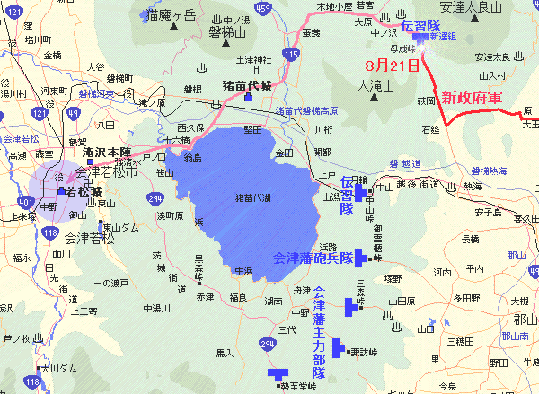
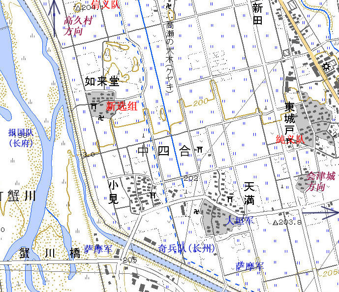
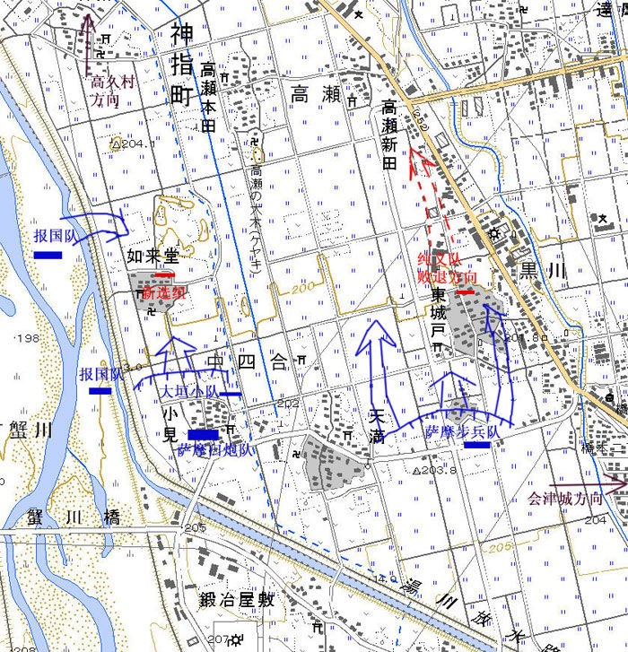
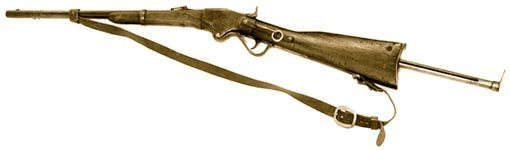
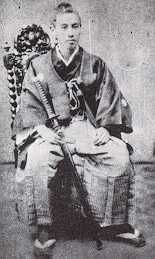
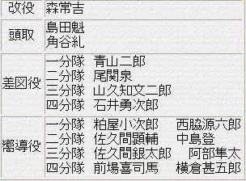
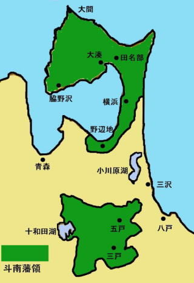
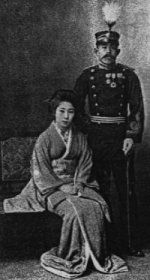

您是本帖的第 15656 个阅读者
matthaus   身份：旅人 言论：34 入籍：2007年12月25日 |  历史背景：庆应四年（1868年）八月，戊辰内战中的会津战争已经到了最后阶段，随着东北诸藩的相继降伏，会津藩的抵抗力量被新政府军三面包围在会津藩若松城和周围的少数孤立阵地中。幕府将领大鸟圭介率领2000多名精锐幕军逃离会津转进仙台，这加速了会津藩的战败，而以新选组队长山口次郎（斋藤一）为首的23名新选组队士，却拒绝了原长官土方岁三的命令，留守会津…… 最后的会津新选组
――山口次郎 （1） 庆应四年(1868年)八月二十三日 败退，不折不扣的大败退，猪苗代城以西的道路上挤满了身穿会津藩、二本松藩、仙台藩等各色军服的藩兵，成群结队，从前线落荒而逃，他们溃不成军，丢掉了铠甲、步枪、弹药、所有的累赘，他们面孔呆滞，惊恐万状，已经无法用军纪来约束，日本战争史上史无前例的最猛烈炮击已经彻底剥夺了他们作为军人、作为武士的骄傲灵魂。 “这些自命不凡的家伙真是可恨、可怜，我真为他们感到羞耻！我真是个大白痴，居然会相信三藩兵马靠得住！”幕府陆军奉行兼传习队联队长大鸟圭介，这个温和有礼的男人罕见地吼叫着，发泄着长久压抑的悲愤。大鸟数日不眠不休，精心布置的母成�g三道防线，在萨长联军板垣(退助)支队的三路猛击下，两日之内完全崩坏了。 虽然以战斗力而论堪称奥羽越诸藩同盟军中精锐的精锐，但由平民中募集成军，从军官到士兵大多出身卑微，连长官大鸟圭介也只是一介町医之子的传习队，一向被武士出身的诸藩武装冷眼轻视，战场上无论传习队陷入多危机的战局也见死不救。这次在母成�g的防御战，又是因为诸藩藩兵被炮击吓破了胆擅自溃退，把仍然坚守阵地的传习第二大队抛在身后置之不理，而招致防线的彻底崩溃。  板垣支队的推进路线 同盟军已经建制混乱无力反击和固守，板垣支队势如破竹地推进，猪苗代城和十六桥的失守将只是数小时内的事情。之后就是近在咫尺的会津城，会津藩完蛋了，这些无能的武士在毁灭战局的同时也将葬送自己的老巢，大鸟这样想着，环顾着四周的营盘。 在一处简陋的茅舍门前，颜色血红，印着山形纹，绣着金色“诚”字的战旗迎风飘扬，手持战旗的旗手一动不动地站在那里，旗手身边，瘦高的年轻卫兵持枪而立。 虽然旗手和卫兵身上的旧筒袖军服又脏又旧，带着战场的泥土硝烟，虽然旗手显然右腿有旧伤，只能勉强保持身体竖直，虽然卫兵脸上从右耳贯串到口鼻的可怕伤疤完全破坏了他稚嫩的面孔。但仅仅就是这两个兵，就带着令人生畏的凛然气势。 “果然是岁三兄亲手带出来的，驰名京洛的壬生狼啊！”大鸟带着对手下爱将的赞赏点了点头。在母成�g溃退之中保持建制不乱，纵使陷身敌后险境仍能奋勇杀敌，冲破重重包围成功脱险归建的新选组，正暂驻在此处。 并不知道自己被陆军奉行大人暗暗赞赏的卫兵池田七三郎，不满18岁的少年队士，两天两夜的战斗和行军，饥饿和疲劳让他的脑袋和肚皮都嗡嗡作响，一切有关武士的神圣报国使命都敌不过想大吃一顿和呼呼大睡的念头，但身为队长警卫的骄傲依然激励着他保持着身体和步枪的纹丝不动。就在他的眼皮开始不由自主地合拢时，一声怒吼让他全身灵醒。 “很抱歉，我拒绝奉命。” 发出此言的正是新选组队长山口次郎，也就是曾经的斋藤一。他并不是有意对长官不敬而高声怒吼，而是因为在猛烈炮击中听力暂时遭受了损害，以至于无法正确控制自己说话的声音。 焦躁的土方岁三上下打量着眼前疲惫不堪强打精神的年轻人，眼神中一瞬间变换着愤怒、惊愕和难以置信。虽然已不是新选组的副长或局长，而是脱走幕军中的高级将校，最精锐的传习第一大队参谋官，土方岁三还是习惯性地命令新选组队长斋藤一率队转进仙台，放弃已势不可守的会津危城，继续和新政府军的长期对抗。但他完全没有预料到，一向沉默而不折不扣地服从和执行命令的斋藤一，会拒绝自己的指令。 “山口君，请谨慎考虑你说出的话！”土方嘶哑着喉咙低吼着斋藤的化名，似乎下一句就是“请你切腹！” “身为武士，抛弃为之效忠的容保公和并肩战斗的会津诸队战友，独自逃命，这一点我无法认同。”斋藤站得笔直，一字一字尽可能不带感情地说着，压抑着激动和不安，也许是五年来第一次把，正面拂逆土方先生，若是在京都，这想都不敢想。 “但是会津是守不住的，对不对？留在此处的战斗将是没有意义的，对不对？” “对，会津是守不住的。” “这不就对了，所以离开会津，这并非逃命，而是要保存有用之身继续战斗下去，而在仙台，在福岛，我们还能联合盟友继续为幕府而战，这对于新选组来说才是有意义的战斗，斋藤，你应该知道这是不一样的。”土方勉强地耐心费着口舌解释着浅显而人人皆知的军事观点。 “会津是守不住的，也许土方先生的观点是对的……但坐视会津陷落而逃走，这违背了新选组一直坚守的诚义之道！”斋藤嗡嗡作响的脑袋思路异常清晰，一年以来节节败退的每个战场都在眼前浮现，斋藤想，到此为止吧，就是这里了。无论逃到天涯海角，结局也是一样，也是无意义的战斗，何必为了渺茫的希望而作出违背士道之举呢？“让我抛弃死去的同志，抛弃还活着的同志，我做不到，我决心已下，要为报答容保公的恩义留下来。” 土方岁三恼火的情绪中带着惊讶，长期以来他从未发现过斋藤一对松平容保有着比其他新选组干部更深刻的崇敬，但此时他却说出这样的话来，土方愤怒地说：“容保君对我等有恩，难道幕府就没有吗？我的命令如今不是命令了吗？斋藤，你难道不是幕臣吗？” “我不是幕臣。”这样的回答让土方无言而对，是的，因为中途奉命脱离新选组加入御陵卫士，斋藤一是新选组中唯一未能正式受封为幕臣的干部，仅仅就这个话题而言，土方是有愧于眼前的抗命者的。 “斋藤，你现在是新选组队长，不要意气用事。”土方也许自己都未觉察到自己的语气软了下来，难道斋藤不明白，自己的意思只不过是不愿看到他死在这里吗？“就在昨天，我还以为你们都在母成�g战死了，而你在绝境中把全队都带了回来，这很好。但你现在的念头只是带着部下无谓地送死，我是无论如何不会答应的。” “我不驱使任何人，不以新选组名义强迫任何人，土方先生，我申请辞职。” “吓？” “现在就移交队务吧，土方先生，队旗、兵士、装备、辎重，您都带走，由安富先生带队，岛田兄任后卫，可保转进征程安全顺利，我只一个人留下即可。”【注1】 在残破溃败的战局和纷乱的人心之下，一切森严法度和上位者的尊严似乎都失去了它原有的威力，土方无奈地用复杂的目光看着这个不出意外几天内就会战死的部下，仿佛今天才第一次认识这个平素沉默的年轻人的本质，此时的斋藤在土方眼里，有别于在京都不发一言地遵命，不发一言地砍人，不发一言地饮酒的人斩工具，是具有清晰思想和战场经验，和自己有着平等灵魂的军人。 （多年来我一直无条件地居高临下指使他们，难道竟然错了么？） 如果此时再用法度压他，倒显得自己无理了，土方不舍得新选组最后一个留下的古参干部就这样赴死，但同样不愿在这个时候还粗暴干涉一个武士最后的选择。 “如果你执意留下，那么就要以堂堂正正新选组队长的身份留下，而不是‘山口次郎’或者‘斋藤一’这个人。新选组的队旗，也将与会津城共存，你去征集志愿留守的队士，两小时后名单呈报给我。”土方冷冷地丢下这番话，扭头离开。 很快留守名单得以确定，留守干部只有两名，小队长久米部正亲和炮兵曹长志村武�i，其余军官和士官全部奉命北上，平队士则有20名，旗手梅户胜之进，队长警卫池田七三郎也名列其中。 从京都到会津，新选组已经经历了无数次的内部纷争和分裂，此时当他们在炮声隆隆的会津城下分道扬镳之时，彼此都知道，这肯定是新选组，最后一次分裂了。 也许是抱着带走有生力量，听任留守者送死的愧疚，脱走幕军给最后的新选组留下足够的装备：清一色恩菲尔德步枪，充足的步枪弹药，一门4磅炮以及50发榴弹炮弹。 天气晴好无云的清晨，在毫无暖意的朝阳斜射下，整装北上的新选组队士，一个个列队从留守队士面前走过，走在队伍末尾的中岛登军曹，不敢看但又禁不住抬头仔细地看着队长和战友们的脸，似乎要把这一幕永远留在脑海记忆中直到生命尽头：斜背恩菲尔德步枪，左手按在佩刀上笔直站立的斋藤一，曾经冷冽无情的目光，却出奇的平静柔和。 ―――――――――――――――――――――― 【注1】安富――此时的副长安富才辅；岛田――此时的小队长之一岛田魁。 【注2】根据多方资料，恩菲尔德步枪是当时新选组最有可能装备的主力步枪。 关于恩菲尔德(Enfield)步枪 这里所指的并非是在20世纪上半叶成为所有英联邦国家标准制式步枪，第一次世界大战、第二次世界大战以及朝鲜战争中都大放异彩而为人熟知的李-恩菲尔德短步枪。而是指它的前身，恩菲尔德1853式步枪(Muzzle Loading .577 inch Enfield 1853)。这是一枝单发前装式线膛击发枪，代表了前装线膛枪发展的最高水准，也是前装枪最后的谢幕产品之一。 恩菲尔德1853式步枪，简称P53，口径.577英寸（14.14毫米），全重3.89公斤，枪长1.232米，配43.2厘米的刺刀，使用纸质一体化封装的弹丸和弹药，大大方便了射手的装填上弹。优秀的射手可以在一分钟之内装填击发三次。而恩菲尔德另一突出优点是射击精度极高，有效射程达到800米，击发稳定，易于操作。 简洁灵敏的枪机设计 使用的枪弹 围绕恩菲尔德P53有个著名的传说，在1857年，在英属印度的印度人殖民军中流行着一则流言：恩菲尔德步枪的枪膛保养和弹药封装都使用了用猪油和牛油混和动物脂肪做润滑油，因为士兵在装弹时必须用牙撕开弹药封装纸，无可避免接触到润滑油，所以这被看做是对穆斯林和印度教徒的宗教侮辱。最终这种宗教对立导致了1857年印度大起义的爆发。 幕末时代，恩菲尔德步枪在日本售价不菲，来自英国原装厂的要17-20两银子一杆，而来自其他殖民地国家组装厂的也要12-17两银子一杆，这还是不计算弹药以及必要的维修器材，零配件的裸枪费用，但恩菲尔德步枪仍然受到了幕府和各藩的纷纷抢购，有据可查的进口数量就达到了5万2千多挺，而实际的进口和仿制数量大概4-5倍于这个数字，可以看出当时无论幕府还是诸藩都在武器装备改进上不惜血本。据说在美国南北战争结束后，淘汰的六十万支恩菲尔德步枪中有近五分之一出口到了日本。 在戊辰战争中，幕府军仍主要装备恩菲尔德，但部分精锐部队已经少批量列装更先进的后装线膛枪，例如英制斯奈德步枪（Snider P1864，可以说是恩菲尔德P53的后装改进型），法制夏斯波步枪(Chassepot M1866)。而萨摩藩甚至装备了1万多枝历史上第一支具备连发功能的步枪：美制斯班瑟骑枪(Spenser repeating Riffle)。 ―――――――――――――――――――――― 我一向习惯用近现代军事语言来叙述古代战争，如果不这样写我自己会没有代入感，如果觉得不习惯的请见谅。 [此贴子已经被作者于2008-5-19 23:58:31编辑过] |
| |
 2008-3-28 0:45:13 |  |
matthaus 身份：旅人 言论：34 入籍：2007年12月25日 | （2） “谢谢” “不胜感激” “多谢” …… 感激声中，一双双肮脏粗糙的双手，依次接过递来的饭团，狼吞虎咽地吃了起来。 “啊，亲爱的小姐，您的手真是太完美了――跟您的相貌一样美丽，这样的纤纤玉手递来的饭团，就是山珍海味也比不上呢。请问小姐尊姓大名，芳龄几何？家住何方……”殷勤得过分的恭维话语伴随着周围同伴的淫荡笑声，把眼前挎着篮子分发饭团的姑娘吓得花容失色，跺了跺脚，就把剩下的饭团丢在地上，跑出了这间只剩下三面墙的破屋子。 “哈哈，破魔男，真有你的。这时候还能想起‘色’字怎么写，老子现在早把步枪当老婆，不知道啥叫女人了。” “新井你太猴急啦，把美丽小姐都吓跑了，只能切腹谢罪了啊哈。” 大伙儿你一言我一语，旁若无人地调侃起哄，似乎完全忘记了正身处敌军重重包围的危城会津，近在咫尺的炮击和流血。 十天来的苦战，不但让留守会津的新选组战斗人员减员8人――其中5人阵亡3人重伤――也让活着的人处于发疯的边缘。9月3日，新选组从长命寺方面战线撤回阿弥陀寺附近休整。于是――战争就是这么奇妙，哪怕只是1夜不断被炮击吵醒的睡眠，哪怕是只后撤了几百米，哪怕是仅仅是看不到敌军的脸孔而已，新选组队士就已经从发疯的边缘，恢复了正常人的喜怒哀乐和欲望。 “破魔男，你要晓得，俺们会津，年轻武士是绝对绝对不能和陌生姑娘搭话的哟，违规的家伙虽说不用切腹，但会给大伙鄙视得死去活来哟。”本来就是会津人的高桥渡则是用足了乡音一本正经地教训起来。 而被调侃的主角却满不在乎地从地上捡起姑娘丢下的饭团大嚼起来。 新井破魔男加入新选组时间不短，但无论剑术还是学问都很平庸，全队换装洋枪后，事实证明枪法也不怎么样，唯一可称道的就是快速的装弹速度，于是被分配为枪弹装填手。在留守新选组中，他是一个异数，当山口次郎（斋藤一）征集志愿留守者时，其他人都有很合理的理由，或者是和队长关系铁，或者跟会津藩的某人关系铁，或者索性就是会津人。可新井的理由很不像理由： “赶了太多的路了，队长，我两脚满是水泡，太疼了，不想再赶路了。” “怕脚疼，就会先没命，你知不知道？”斋藤觉得自己是不是碰到了白痴。 “队长，我跟您同岁，也是足轻出身，虽然没您的厉害剑术，但托新选组的福，在京都，以往不敢想的高额俸金拿过了，以往不敢想的好酒好菜吃过了，以往不敢想的漂亮女人也睡过了，可以说我的人生已经相当圆满了。既然如此，死掉也不是多可惜的事吧。” “那么你之前干吗还跟着我们？” “只是突然对赶路厌倦了……我也不清楚……队长你别为难我了，呵呵。” 斋藤于是认为这个兵已经失去了战斗力。 不过在这几天的战斗中，新井和神射手森权次郎的配合倒还默契。 “吃完了吗？有军令传达。”队长斋藤一不知道什么时候突然出现在队士们面前，站在他身后的是现存队员中阶级仅次于队长的久米部正亲。 起立，瞬间的寂静，即使只有十几个人，即使带队干部早已面目全非，这个队伍依然保持着足以为傲的纪律性。 “出阵如来堂，加强柳桥-高久村一线防御。” “遵命”队士们齐声回答。 “那请问队长，此刻这个如来堂，是在敌军手中，还是我军手中呢？”志村武�i炮曹长眯着眼睛问，当然现在新选组已经没有炮了，4磅炮已经被萨长军火力摧毁了。 “我也不知道，去了就知道了。” 此时会津城下已经无处不是血肉战场，城西也是一样，紧急动员起来的女兵队――会津娘子队的队长，年仅22岁的中野竹子，就在数日前牺牲在柳桥。而反过来，因政府军方面攻击重点是城南，城西的政府军数量并不多，所以在城西双方的攻防呈犬牙交错的拉锯状态，就是军官也搞不清现在的战局到底如何。 接下来就是细节工作了，志村武�i检查每个人的弹药储存，记录下需要补充的数量，久米部正亲拿着记录去天守阁的守城大本营，找弹药执行官�|原平马讨要短少的弹药――尤其是那唯一的一支缴获的施奈德枪所需要的后装弹药，斋藤一和小幡三郎在地上用树枝比划着地形图，小声地讨论着，小幡三郎是侦察的好手，他会作为先导分队先行出发。 至于其他人，在吃饱之后，也默默地整束衣衫，擦拭佩刀和清洁枪膛，不知谁随口说了一句：“嘿，大伙想好了死了葬哪儿没有啊？” “当然是葬到家乡啦――可我没钱付运费咋办。” “死在哪儿，就葬在哪儿，有什么好说的。” “如果可以让我选择的话，我想呆在胜沼，我的好朋友都死在哪里。”池田七三郎一边擦刀一边说。 众人你一言我一语地发表了意见，末了有人冲着斋藤问：“队长，你呢。” “我么，就那里吧。”斋藤随手指着门外不远处的阿弥陀寺，那里是城内临时的停尸场，所有战死的战士以及被远程火炮炸死的、自杀身亡的平民都停放在哪里。一具又一具血肉模糊的尸体被会津人抬了进去，简陋的棺材或担架滴滴答答地流下血来，让阿弥陀寺周围都是斑驳的血路。 “有什么特别理由么？”好奇的新井破魔男想打听一下，到底谁的死让队长念念不忘。 “那里人比较多，会比较热闹。” 队长爱热闹？听到这个回答的队士们都感到十分地不可思议，在他们的印象中斋藤一向来有冷淡离群的趋势。 只是他们不了解，斋藤年轻而孤独的心有多么渴望和团队在一起，仅仅是在一起而已，他并不奢望过多的要求。 午后时分，全队开拔，打头阵双手高举“诚”字队旗的是梅户胜之进，这个中等个头敦实的年轻人尽力保持着稳健有力的步伐，忍受着右腿旧伤带来的阵阵疼痛牵扯。在将近一年前的京都，梅户在天满屋乱斗中用身体掩护了斋藤一而自己身中多刀负了重伤，虽然经过及时救治渐渐康复，但其中刺穿右大腿的一刀大概伤到了筋腱，这让他的腿难以承受自身的体重，承受漫长的行军旅程。队伍在江户集结，改编成甲府镇抚队的时候，梅户曾经提出为了不拖累队伍而自动退队，而斋藤的解决办法则是让他当自己的亲兵，后来斋藤被提升为新选组队长之后则任命梅户为新选组旗手。对于这样“任人唯亲”的人事安排其他队士也没什么意见，毕竟并不是每个人都能义无反顾地用生命来掩护上司，何况梅户作为旗手也非常尽职。 旗手身后的护旗兵是吉田俊太郎和池田七三郎，这也是队伍里最年轻的两名少年。虽然十几人的小队伍还有两个护旗手显得滑稽而奢侈，但斋藤安排时却觉得顺理成章，显然，他已经潜移默化地被土方岁三的讲仪表重排场的作风熏陶了。 斋藤一和久米部正亲并肩走在护旗手之后五步左右，久米部年龄比斋藤大3岁，在京城时是大阪驻屯所的一个伍长，他武艺平平，但处理繁琐的军务是一把好手，有着后勤军官的天分。池田七三郎是他的远房外甥，这个过于勇猛的少年常常让他很是担忧。 之后两人一排依次走过的是清水卯吉、河合铁五郎、森权次郎、新井破魔男、�椅财舳�郎、高桥文二郎、森庵六之助。年龄最大的志村武�i走在队伍的末尾。 以上十三人，连同先行出发侦察的小幡三郎和高桥渡，这是会津新选组最后十五名战斗人员。 队伍整齐地在会津街道上走过，不时要绕开遍布的大大小小的弹坑。这几天政府军从城外小田山炮兵阵地昼夜不停地炮击会津城，每天至少射击三千发榴弹和燃烧弹，无差别的轰击已经让这座美丽的北国之城变得破烂不堪，也让人的神经变得麻木淡漠。路边破烂的房屋里躺着被砖木砸死的、自刃而死的妇孺，这些凄凉恐怖的流血惨状，甚至没有人回头去看一眼。 他们走到了西出丸（西门口），斋藤一出列，向西出丸守将原田对马递交会津城军事总督山川大藏签署的出城令。临时由会津城内妇女和老人结成，用于运输弹药和粮草、救助伤员的临时辅助队站在路边，默默地望着新选组的旗帜，以及别在队员左肩上，红色印着“诚”字和山形纹的小小肩章。这唯一的一支依然在帮助会津藩作战的幕府武装力量，三百年誓死效忠幕府，最后换来的就是这十三个战士，有不少女人望着他们出城的背影流了泪。 这一天是庆应四年九月四日。 |
2008-3-28 0:48:50 | |
matthaus 身份：旅人 言论：34 入籍：2007年12月25日 | （3） 随着会津城渐渐被抛在身后，之前保持着步调整齐的新选组打散了队列，三两人一组，恢复了多疑敏感的狼性，谨慎而敏捷地在田埂和树林间的小径穿行而过。四处不时响起炮弹爆炸的声音，那是敌军炮队的试射，一听声音就知并没有精确的瞄准而毫无威胁。但这样的炮声无疑在警告着会津城的防御者：城外任何地方都不在是安全的。 旗手梅户胜之进也麻利地把“诚”字队旗卷起，套在上好的绢质旗套中。他右胳肢夹着旗杆，拖着右腿奋力保持着行进速度。这个在京都时只是个剑术初学者，个性平庸的青年，伤痛对于梅户来说与其说是苦难，不如说是学堂――他沉默地忍耐每时每刻的肌肉酸痛，在日复一日的忍耐中意志被磨砺得岩石一般顽强。他沉默地地接受斋藤一给他安排的工作，把这看做莫大的信任和荣耀而咬紧牙关去完美地完成。因为旧伤让他比别人容易腿脚疲累，他在全队休息时没有余力如其他伙伴一般四处玩耍，而是沉默地观察着周遭的人和事，思考着自己如何才能继续坚持下去。 迎面走来的是一个扛着粮袋的农民，梅户偏了偏身子，让旗杆斜到一边以便农民能走过去。在他身后还有数十人的农民粮队，其中也有躺在粮车上身染血迹的伤者。 因为谁也没想到萨长军攻来得哪么快，城外的众多粮仓都没有转移到会津城内，如今农民们只能是冒着被萨长军射击打死，被炮弹炸死的危险争分夺秒地将粮食往城里搬。 在战后的传说中，会津藩的末代藩主松平容保，亲眼目睹送粮入城的农民遭到萨长军炮击而死伤狼藉时，曾忘情地抱着重伤垂死的农民失声痛哭。而此时此刻，即将和敌军交火的新选组队士，则没有那么丰富的感情波澜，他们只是冷漠地让开道路，甚至连问问前方敌情的都没有――他们并不指望在这帮农民身上问到什么敌情。 队伍交错前进逼近了如来堂，如来堂前那棵最大的银杏树的轮廓已经渐渐清晰，他们在一处小树林的树荫下停了下来，汇合了先前就在此等候的小幡三郎和高桥渡，还有两个个别队服饰，神色萎顿的兵。 斋藤一认得，这是信义队的兵――信义队是上野彰义队旗下的一支会津人组成的小队，谈不上什么战斗力。他们之前的防区是柳桥到如来堂，如今既然这幅模样，肯定是阵地已经丢失了。 “你们的武川队长还好么。”斋藤尽量不带恶感地说。 “回山口队长的话，武川队长受了点轻伤，情况还好，本队队部已转进至高久村，我等随后也将队部汇合。”一个信义队的兵谦恭地回应。 “那就是逃掉罗！”志村武藏在一边笑眯眯地说：“你们去高久村享受补给和休息，把夺回如来堂的活儿丢给我们？” 两个兵窘迫地背过脸去，挪动着步子试图远离这带着寒意的嘲笑。 “志村先生，犯不上跟他们生气，其实这活儿一点也不难，敌人没几个人，他们只是给萨军小队的白刃冲锋吓傻了而已。”小幡三郎蹲在地上，轻轻地说，他手中的树枝在地上飞快地划着，如来堂的地形和敌兵的位置，“我们只发现7个人，5个在房间里，2个在外边。” “久米部，你带全队主力在正面一次齐射，打倒外边的2个，然后一直压制射击，不要停，不要给他们出屋的机会，小幡、池田、吉田、清水，你们跟我来，从北侧攻进去。”斋藤看着小幡划的草图分派了任务。 各人心知肚明，这里的射界很好，地势和如来堂差不多高，周围有着密布的树林和灌木丛可以伪装自己，久米部谨慎地选择着射击阵地。要跟随斋藤白刃冲锋的队士都摘下肩膀的步枪交给队友，然后他们一个跟随一个弓着身在田地里借助着稻穗的掩护迂回地走着。在已经很接近如来堂的地方，他们听到爆竹一样的枪声在头顶炸响，这是久米部那边的第一波齐射，接着双方的对射枪声此起彼伏，但他们身藏在稻穗之中看不到双方战果。斋藤第一个从田间跃起，拔出刀来飞快地跳上坚实的地面，向已经被火药燃烧的硝烟笼罩的如来堂冲去。 斋藤一无暇回头，不知道身后的兵跟得紧不紧，但还是毫无停滞地从门口冲进如来堂内，一个萨摩兵正在装填子弹，斋藤立刻一刀砍倒了他，旁边正在从窗口向外射击的兵连忙调转枪头，直接用步枪枪杆抵挡着呼啸而来的刀锋。斋藤假装刀势被枪杆所阻挡而停滞，却突然刀面一转削向他持枪的右手――这只右手还握着步枪扳机根本来不及闪开。随着一声惨叫，步枪连同形状模糊不清的几根手指带着一蓬鲜血掉在地上，在这兵抱着断手惨叫时，斋藤毫不留情地在他肚子上补捅了一刀。 这时其他三个萨摩兵都丢掉了手中的步枪，拔出腰间的佩刀，悍勇的萨摩武士知道大限将至，眼中的恨意让瞳仁都变得血红，摆出了示现流的典型起手招式。 小幡、池田、吉田、清水也一个又一个闯进屋内，酝酿着最后的一击，小幡摆出的起手势让敌人目瞪口呆。 “你这个叛徒！萨摩的叛徒！”伴随着凄厉的吼声，一个萨摩兵高举佩刀冲向小幡。 但他高举的佩刀尚未砍下，自己的头颅已经被由上到下劈开，鲜血和脑浆崩裂而出――这正是正宗的萨摩示现流刀法。 剩下来的事情很简单，以多打少砍倒剩下的两个，然后把之前斋藤砍倒的两个补捅了几刀，五具尸体上的枪支弹药和佩刀都被扒拉下来，然后把尸体拖到如来堂外的墙脚下。 久米部也带着其他人赶来了，他们的速度比斋藤料想的慢，当久米部走到斋藤面前时一脸沉痛。 “高桥渡中弹阵亡了。” 高桥渡是在跪着给步枪装填子弹时被打中的，口径点557英寸的锥形米尼弹从他的额头打进去，从后脑打出来，碗口大的出弹口喷射着血和脑浆，他几乎是中弹倒地同时就断气了。 “别放在野地里，把他抬过来吧。”斋藤拄着一支刚缴获的，也许就是打死高桥渡的那支施奈德步枪，简单地说。 如果是用施奈德这样的后装枪，就不用跪着上子弹，会津人高桥渡的死法就不会出现，斋藤轻轻地端起手中的枪，轻轻地拨弄着枪栓。但那又如何呢？人人都有他的死法，在这场战争中，死法是次要的。 斋藤走出屋外看了看那棵枝繁叶茂，老远就能看到的的银杏树，它在距离地面一丈来高的地方分成几个粗大枝杈，堪称一个天然的观察哨。斋藤意识到这一点，想爬上去看看附近的敌我形式，但他不会爬树，不过这难不倒他。 “梅户，你给我打一副梯子，大概哪么高，就用窗框的木料。”他向自己的旗手下着命令，比划着梯子的高度，“要固定在树上，方便队员上下的。” “是，队长。” “志村先生，你也带几个人拆了这房子的所有木料，用来加固掩体，不及早挖好战壕我们很快就会跟他们一样。”斋藤冷冷地指着墙脚的敌人尸体。 其实不用斋藤的特意督促，如果说在伏见的时候，新选组还只懂得呆在树后边躲子弹，几个月的仗打下来，萨长军的炽烈炮火已经让每个人形成了心理本能，来不及找东西吃，用不着斋藤命令就拼命地挖起掩体来。炮曹长志村的那把炮兵铲成了全队的宝贝，一般队士就用刺刀来挖。原装进口恩菲尔德上配的刺刀是幕府的兵工厂自产的，质量很差，挖断很多把。断了刺刀的队士索性拔出胁差来挖土，曾经完美正确使用胁差的山南先生他们看到此情此景大概都会哭笑不得。 不过比起胁差的用法问题，斋藤还是更关心战壕的构造问题。在战势稍缓的时期，大鸟圭介统领的传习队曾巡回会津各队示范西式战法，其中也包括掩体工事构建法，斋藤用学到的一点点常识设计了面向东侧和南侧的两道战壕，而西侧因为是一道向河边倾斜的矮草坪，敌人要进攻就只能白刃冲锋，所以没设计战壕，只挖了能容身三个人的藏兵坑。 在斋藤和志村指导战壕构建的当儿，梅户走过来向斋藤报告。 “队长，梯子造好了，我上下了几回了都很稳当，我还在上边的树杈上多钉了几条栏杆加固，在树上埋伏两三个人都没问题咧。”梅户用那条好腿支撑着体重，满意地微笑着，脸上的笑容仿佛在说“我是个多有用的旗手咧。” 的确是结实的梯子，几把报废刺刀把木料固定得稳稳当当，就是岛田魁这样的大汉上下都没问题――当然他并不在这里，斋藤摘下佩刀架在树根上，招呼了久米部一起爬上了树。 “大垣、长州、土佐、萨摩……柳桥的敌兵旗帜还真多，蟹川桥也不少。”久米部努力辨认着敌军的番号，“除了萨摩兵都弱得不像话，要是我们全队都在这儿，一次冲锋就能把他们打垮。” 但是这里只有14个人，全队不在这儿，他们已经北上仙台了，只有一支岛田魁带队的后卫小队还驻扎在会津城北的盐庭村，这支小队的驻扎似乎代表着土方岁三最后的不放弃的企盼――希望斋藤一回心转意的企盼。 “旗帜多，但人少，也没有进攻的意思，估计在等大炮。” “就算他们在蟹川桥架起大炮，也打不到我们这儿啊。” “我是说，他们没准备好攻下我们这里之后架起的大炮，笨蛋！”斋藤示意久米部往会津城的方向看。 “哦――是的，这里的确是个优良的炮兵阵地，架上几门炮，城内和北越方向的联系就完全断绝了。” “所以我们要做好死守到底的准备，久米部。这是颗让敌人头疼的钉子，但城内没有别的兵力支援我们。” “斋藤桑，咱们做干部的别哪么悲观吧。” “三天，军令是守三天。14个人，守三天。”说到这里，斋藤脸上难得地浮出嘲弄的笑意。 “斋藤桑，说实在的，大家既然跟着你，都有这个觉悟，不过怎么说呢，我倒是觉得我还没打够呢，在京都大阪，砍人我不太在行，扛起枪来，才觉得使这个得心应手，要是东军打了胜仗，我是准备为天皇扛一辈子枪的。”久米部抚摸着枪杆说。 突然“啪”的一声枪响打断了他们的谈话，这枪打在旁边树冠上，一根被打断的树枝应声落地。 “打我们黑枪呢，谁这么大胆？”久米部趴在树杈上打望着，枪是从蟹川河对岸打过来的。 “长州兵？”斋藤望着对岸那一小队身穿黑色军服的步兵。 “是长府，他们是长州的支藩，家纹也差不多，就是那“一横”不太一样。”出身大阪的久米部显然更熟悉西南诸藩的家纹，他悄悄地举枪瞄准那个刚放下步枪的家伙。 就在扣响扳机的一刹那，那人仿佛有第六感一般，突然趴在地上，子弹从他头顶掠过。 “算了，射程太远根本打不到，别浪费子弹了，我调森权次郎上来，四支快枪再加一个弹药手，能让我们的火力增强一倍。”斋藤拍着久米部的肩膀，他正急着装填子弹想再来一枪。 久米部收起他的子弹匣，身子靠在树杈上，眯着眼望向自己的队长，“斋藤桑。” “恩？” “我得说，我很幸运，自打进了新选组，遇到的都是好长官，是你们让我觉得我能成为好军人，而不是剑道馆里顽劣的徒弟。 你是我们中最骁勇的战士，和你并肩作战是我一辈子的荣耀，我现在向你发誓，会战斗到最后一刻。” “即使我死了。” “对，没错。” “谢谢你这样让我安心。” 两个人一先一后从树上爬下来，周围的土垣上，队员们还在奋力掘土挖战壕。 如来堂门窗的木料早已被拆卸一空，屋内北侧的影墙上平展展地挂着新选组的队旗，队旗下方躺着高桥渡的遗体。 【附 庆应四年九月四日如来堂周边兵力分布图】 [此贴子已经被作者于2008-3-28 0:53:30编辑过] |
2008-3-28 0:50:27 | |
matthaus 身份：旅人 言论：34 入籍：2007年12月25日 | 写这篇东东之中，参考了很多这里各位大人的文章资料，深深表示感谢，虽然这是小说不是历史，不过里边有什么各位觉得不够合理的情节也希望能不吝啬地提出来，谢谢各位 |
2008-3-28 0:52:06 | |
matthaus 身份：旅人 言论：34 入籍：2007年12月25日 | （4）  |
2008-4-11 11:16:22 | |
matthaus 身份：旅人 言论：34 入籍：2007年12月25日 | （5） “斋藤先生，看来我们又被包围了――或者说――又将被包围了。”在斋藤一透过窗口望向蟹川对岸闹哄哄正列队和调配船只的长府报国队士兵队列时，志村以他那惯常的不慌不忙的语气慢悠悠地说道。 “恩，梅户，你把久米部曹长和小幡先生叫来这里。” “遵命” 在旗手朗朗应答转身离去后，如来堂里只剩下这两名干部，志村用一种商量的口吻漫不经心地说：“要想逃，就得趁现在，等天亮想逃也来不及了。” “恩”斋藤也似乎是漫不经心地应了一声，又转向东面向着东城户方向的窗口，纯义队的防线出现了突然的骚动，貌似是被从自己的视线看不到的阵地另外一侧遭到了萨摩步兵的包抄突袭，双方阵前肉搏的刀光时隐时现。纯义队招架不住，防御陷入崩溃，且战且退，被逼出防御工事的纯义队队士不断遭到正面逼近的萨摩步兵的射杀。 这时久米部正亲、小幡三郎和梅户胜之进鱼贯而入踏进如来堂，斋藤转过身来，挺直了身子。 “诸位，时间紧迫，我不多加解释，直接下达命令，以下的每句话，望坚决彻底执行。” 听到这样严肃的命令下达，梅户不禁迈前一步问道：“队长，我暂且回避？”作为普通队士，并没有资格参与干部会议。 “不，你留在这里，有命令直接下达给旗手。” 梅户的面颊闪过一丝兴奋，移步到新选组队旗旁边肃然而立。 “第一、新选组守卫如来堂任务不变，全体在我尚未下达突围命令时必须继续战斗。” “第二、令小幡三郎，自选三名队士，出击东城户方向，掩护纯义队撤退。” “是。”小幡向斋藤一轻轻地点了点头，转身走出屋外。 “第三”斋藤停顿了一下，目光转向新选组队旗的方向，梅户立刻“啪”地双脚一碰，骄傲地胸脯挺得高高的。 “令新选组旗手立刻焚毁队旗。” “队长！！不，队长，请收回……”梅户脸色突变，他失控地高喊着，眼中顿时涌出绝望的泪水。 “什么叫‘不’！你想抗命吗？”斋藤一的眼中刹那间闪过不可抑制的暴怒，他从来不是什么好好先生，但也不擅长像土方岁三一样用恩威并用软硬兼施的话语来教训不听话的下属，他的方式很简单，就是打！他顺手连鞘拔出腰间的胁差，以迅雷不及掩耳的速度狠狠抽打着梅户的背脊。“胆敢抗命的新选组旗手，就是死也无法洗刷耻辱！” “队长！身为新选组旗手的职责，就是誓死捍卫队旗，直到生命最后一刻！队旗乃吾命！这是从队长授旗予我之日的信念！只要我活着，绝不允许毁坏她！谁都不成！”梅户歇斯底里地高吼着，承受着暴烈的殴打：“打也没有用！除非砍我的头！” “混账东西！我等被数百敌兵所围，你有何神力捍卫队旗幸免？难道身为旗手甘心让队旗遭萨长奸贼凌辱奸污？” “不！我不甘心。” “那就马上执行命令！” “队长，我……” “执行！”斋藤已经唰地抽出了佩刀，谁都不会怀疑他会随时砍下梅户的头颅。 久米部已经右手递出打火石，右手轻轻拍着梅户的肩，“时间紧迫，快执行吧。” 梅户胜之进，哽咽着慢慢蹲下身子，泪眼模糊地摸索着腰间的弹药袋，掏出一筒恩菲尔德步枪专用弹药，用牙撕咬开包装纸，把这一小筒火药撒在墙脚的地面上。他扶着墙用那条好腿的力量摇晃地站起来，望向平展地悬挂在影壁上的那面鲜红的，绣着端庄而潇洒的金色“诚”字旗帜，他泣不成声地抓着那赤罗纱质地的旗帜面料，感受着那让人舒服安心的厚重质感，抚摸着哪些子弹射出的焦黑弹孔，终于他捧着旗帜嚎啕大哭，狠心用力将旗帜从旗杆上扯了下来。 终于铺在墙脚的这面长4尺，宽3尺的新选组队旗，虽然她是新选组转战会津后新制之物，并非是五年前新选组创立时的那面初始队旗，并没有经历过京都街道上的血雨腥风和翻手为云覆手为雨的政局，只是一次又一次地遭遇现代工业制造出的枪弹攒射和炮弹爆炸的硝烟洗礼。但现在她静静地躺在这里，似乎聚集着无数生命凝结的骄傲执念，拒绝着最后的命运，梅户颤抖的双手打了几次火都没成功点燃，终于一丝火星在旗帜的一角窜动，跳跃，然后拉成一条火线，渐渐地扩大。 在火药的助力下火苗此起彼伏地燃烧蹿升，一点一点地吞噬着鲜红的旗面，屋内每个人的眼睛都被鲜红的旗帜和鲜红的火光映得鲜红。透过那红色的瞳仁，谁也不知道他们的脑海中浮现的是什么？是昔日大权在手横行京都大阪街头的骄傲志气？是那一个又一个浴血牺牲的袍泽战友？是那些倒在刀剑之下的肮脏奸贼？还是，加入新选组的第一天，第一次迈进屯所大门时，映入眼帘的那面壮绝鲜明的红色旗帜？ 那骄傲的遍体燃烧的旗帜上，突然窜起一道数公尺之高几乎撩烧到房梁的剧烈火焰，但火苗随即力气放尽一般低落下去，愈来愈小，最终，地面上只留下一片絮状的暗灰色灰烬。 “梅户胜之进，继续接受下一道命令。”斋藤一沉声说道。 “是。”失去旗帜的新选组旗手，满面泪痕地，维持着本能的习惯，站直了身体。 “包队旗残灰。”斋藤从怀中抽出一张干净的怀纸。 梅户接过怀纸，从地上捻起一撮灰烬，撒在怀纸上，他的眼泪仍抑制不住，滴滴答答地落了下来，让白净怀纸上那细腻的灰烬化成了一滩滩灰泥。他用颤抖的手把纸张折叠起来，叠成小小的纸包。 “听好，这是你的路线，这片稻田还未收割，你从田间匍匐而过，然后绕过高濑神社，沿黑川北上――汇合留驻盐川村的岛田分队一同前往仙台，向土方先生报告新选组队旗焚烧经过。”斋藤指着窗外北面的稻田说。 “队旗即吾命！队旗既已焚毁，我今日只有战死，没有偷生的道理！” “混蛋！新选组旗帜难道可以未经汇报烧得不明不白吗，这是你的职责，不去不行！” 在梅户胜之进仍僵硬地站立犹豫之时，斋藤一突然伸手从梅户的腰间拔出佩刀，在旁侧惊愕的目光中，整把――实事求是的说应该是半把佩刀――已经完全地拔出刀鞘。这把刀在几天前与敌兵的近身格斗中早已从中折断，近一尺长的刀尖不知去向，只剩后半截刀身。 斋藤转身走向自己的行囊，从中抽出一把连鞘的佩刀，不由分说地把梅户腰间的空刀鞘抽出丢在地上，把自己手中的佩刀插在梅户腰间。 “你还是我的旗手，要有旗手的尊严。”梅户的眼泪又止不住地流了下来，左手紧握着腰间的佩刀，这虽然不是斋藤最爱用的佩刀鬼神丸国重，却是斋藤的最后一把备用刀。 昔日新选组在京都不可一世的时候，高级干部多有攒钱购买宝刀的爱好，衣装可以粗陋，酒菜可以低劣，但上好刀剑绝不放过，副长土方岁三就曾经一口气定购过三把贵重的“和泉守兼定”。精通刀剑鉴赏之道的斋藤一自然也不例外地攒了数把爱刀。但自从新选组东归江户，转战会津，戎马倥偬之下根本无从注重刀具保养和研磨，好几把刀已经在白刃战中被砍废了，这是仅有的一把还带在斋藤身边的备用刀。 “还不快出发！”斋藤粗鲁地吼道。 梅户胜之进咬着嘴唇，向着斋藤一90度鞠了个躬，转身跃出如来堂的门口。 “这孩子就算逃出去，也活不长，他的脸上带着必死之志啊。”在窗口中隐约见到梅户的身形隐没进稻田之间，志村武藏慢悠悠地说。 “至少梅户肯定能见到土方先生，我交给他的命令，没有完不成的。”斋藤一应道，至于土方得悉汇报之后的后续处置，必然是在仙台或者是其他的什么地方，招兵买马，重建新选组，再任命一个队长，再制作一面新队旗。他太了解土方的秉性了，这也是他决意烧毁队旗的原因，他既不容许队旗在自己任队长时遭到玷污，也不甘心新选组的历史就葬送在今天。 若是新选组队旗被俘或失散，新选组就等同于彻底灭亡，无重建之尊严，而若是队长焚烧队旗之后战死，则荣光的番号将得到续写。 新任队长会是谁呢？是安富才辅？还是岛田魁？或是土方先生相当欣赏的后起之秀相马主计？斋藤一不禁走神地想着，不过土方先生的人事安排很难被人猜中吧，半年前正忙于在会津照料伤员的自己也没想到会突然被任命为队长呀。 斋藤一和久米部正亲整理了各自的行囊，往各自腰间的弹药匣中补充一些弹药，就匆匆迈向各自守卫的战壕。不远处东城户的白刃战喊杀声和此起彼伏的枪声仍在继续。 |
2008-4-11 11:18:13 | |
今出川公艺   头衔：今出川家督从四位下左中辨骏河守 身份：守护 言论：2609 入籍：2003年7月7日 | 这个版多时无人管理，难得您坚持连载。读者还是有的。先加精。 |
 盖所谓东海道 自东都至西京 长二百余里 有驿五十有三 山则函岭 水则天龙矢矧 都邑则静冈名古屋 其间长亭短驿 名山大川 固不为鲜矣 然至山海之胜 鱼虾之美 则余独推兴津为最 是以数年以来 缙绅公卿 避暑游于此地 陆续麇至 山苍水明之乡 亦将渐化弦歌热闹之地 可叹也 | |
2008-4-13 19:03:11 | |
matthaus 身份：旅人 言论：34 入籍：2007年12月25日 | 以下是引用今出川公艺在2008-4-13 19:03:11的发言： 这个版多时无人管理，难得您坚持连载。读者还是有的。先加精。 谢谢，主要是因为，我很多关于新选组和戊辰战争的知识是从这个网站学习到的，如果没有的话我对新选组知识的吸取可以说是太困难了（我不懂日文的），因为现实中对明治维新历史有兴趣的爱好者实在太少了（对战国有兴趣的倒是不少，可惜我对战国没啥兴趣），所以作为报答也一定要把小说贴这里。也希望大家对文章多多指教。 [此贴子已经被作者于2008-4-14 21:32:33编辑过] |
2008-4-14 21:32:02 | |
朝比奈光智  身份：旅人 言论：45 入籍：2008年3月17日 | 如此优秀的作品。实在是令人兴奋呀。。。。 每每都人我觉得意犹未尽。恨不能一口气欣赏完毕。但又舍不得的看完。 真是矛盾的紧呀。。。。。。。。。。。。 |
2008-4-14 21:52:35 | |
matthaus 身份：旅人 言论：34 入籍：2007年12月25日 | （6） 小幡三郎、吉田俊太郎和河合铁五郎在明暗不清的田埂上高速地跑着，恨不得爹娘当年多生出两条腿，在他们三人出其不意的侧翼袭击下，兵力并不充足的萨摩步兵队试图包围全歼纯义队的企图并未实现。还有战斗力的纯义队队士趁着擦黑的夜色，夺路而逃，绕过一片小树林往北逃去了。小幡他们也非逃不可，但队长的命令没允许他们往北逃走，所以他们只能冒着横飞的流弹跑回如来堂。 天边渐渐现出了亮色，视线中的景物越来越清晰可辨了，这就给跑动中躲避敌兵枪弹增加了难度。眼瞅着子弹在他们的头顶嗖嗖地飞过，久米部和一干新选组队士都情不自禁地高喊着：“快啊！快跑啊！”年纪最轻的吉田俊太郎跑在头里，他终于接近了战壕，他一个箭步跨了上来，窜进了战壕里，小幡三郎也紧跟着他的脚步跳进了战壕。 河合铁五郎也快跑到了，他的脚步却有点一拐一拐的，好像受了点伤，久米部正亲担心他跃上战壕不利落，禁不住从战壕里探出身子伸出手去拉他。此时一发子弹正好击中久米部的右胳膊，打碎了下臂骨，剧烈的疼痛如同强烈电击，顿时他动弹不得，身边的战友连忙赶紧把他拉进战壕里，河合铁五郎也翻进了战壕，他右小腿给刺刀捅了个小洞。 “久米部先生，您伤得不轻，到如来堂里休息一下吧。”小幡喘着粗气，一边把空的干粮袋撕成条，预备给久米部包扎，一边感激地说。 靠在壕沟侧壁上的久米部，咬着牙关看着他那条受伤流血的胳膊，但剧烈的疼痛让他甚至不敢让小幡碰这处伤口，他嘶嘶地吸着气，调了半天呼吸才说出话来：“今天，我要打到最后的最后的，有没有挨枪，都不能改变。” 小幡见他态度坚决，也不多说，把布条递给久米部，提起佩刀转身要到斋藤那里复命。 “小幡先生，别让队长知道我挨枪了，这时候他不能分心，这里我能应付。”久米部对着他敏捷跃进的背影说道。 斋藤一看到小幡他们3个的归来既满意又失望――他没想到纯义队逃得哪么干脆，他本以为会有至少一半纯义队的兵会留下来跟自己并肩作战――他还记得那些比今日还险恶的枪林弹雨下，两队队士不顾自己安危，毫不犹豫地愿为对方去死的情形，但转念一想，这种一厢情愿期待别人才脱虎口又主动投身火坑的想法，不现实也不公平。他和小幡交流了几句，就让小幡和吉田俊太郎先到藏兵洞里歇歇力气，派河合铁五郎到如来堂里，帮助志村武藏监视正在渡河的报国队。 太阳升起来了，在黎明的朝阳沐浴下，嘹亮的喇叭声和噼里啪啦的鼓点从萨长军的阵线后方传来，依然是节奏和单调刺耳的《�mさん�mさん》 ： 亲王大人哟亲王大人 您的坐骑前面 随风翻腾的那是什么呵 您不知道吗？那是征讨国贼时 我军的锦绣御旗呀 那些对高贵天皇心怀鬼胎的鼠辈 咔哒咔哒咔哒 萨长土勇士瞄准他们狠狠地打啊 咔哒咔哒咔哒 伏见 鸟羽 淀 桥本 葛叶的战斗 咔哒咔哒咔哒 萨长土肥一起联手 将鼠辈统统射杀 咔哒咔哒咔哒 …… 这首歌可以说毫无艺术性可言，尖锐的音符刺入脑髓，让人心烦意乱，久米部听到这恼人的旋律觉得伤口都更疼了一点，牵引得胃都疼了，他咧着嘴，用一条布条紧紧勒着右手肘，免得伤口的血流得太冲，然后轻轻地动了动右手手指，发现还能动弹，“至少还能扣扳机，打死几个萨贼”，久米部这样想着。但是对面的萨军都隐藏得很好，并没有跳出来给他当靶子的意思。 随着响彻战场的喇叭声，在如来堂正面方向一直谨慎畏缩的大垣小队也壮起胆来从地上跃起，一半人原地蹲踞射击，一半人开始向前冲锋，战壕里的新选组队士也迅速地瞄准射击，激烈的射击顿时让如来堂前的战壕和田野都笼罩在枪膛冒出的烟雾之中，这让双方的命中率大为下降，在混乱对射大垣兵越跑越近了，只有几十公尺的距离。 池田七三郎端着沉重的恩菲尔德，瞄准了在自己正面冲锋的一名敌兵，池田是死过两次的人，在伏见鸟羽之战的最后一天，他腹部被枪弹贯穿，大口吐血，在胜沼，他头部中弹，子弹从右耳射入，从鼻孔射出，脑浆迸流，但在可怕的伤势之后他仍然活了下来，这个被死神拒绝了两次的少年此时有着比其他成年兵更甚的冷静，仔细地计算着提前量，扣动扳机，击发。极度的专著让他几乎没感到强大的后坐力对肩膀的撞击，他保持着射击姿势，看着被瞄准的目标被切实击中，于是立刻收起恩菲尔德，从弹药包取出一筒弹药，手脚麻利地进行装填，但他刚装填了一半，眼看几个冲得最近的大垣兵已经近在咫尺，仿佛一个跨步就能跃进战壕哪么近了。斋藤一大吼了一声“出击！”丢掉手中的斯耐德步枪，拔出佩刀跃出战壕。池田七三郎也连忙丢开步枪和通条，和其他新选组队士一起拔出佩刀跃出战壕。 大垣兵吃了一惊，他们本应用密集的弹幕把新选组压制在战壕里，但急于立功的他们没协调好火力掩护的层次，更没想到守军在这样的局势下还敢白刃冲锋，在犹豫是迎战还是推却，在很短的时间内，双方已经刀刃相交，铿锵的撞击声折射着朝阳的光芒。 站在臼炮炮位之后的萨摩步兵第六队队长野津，眯着眼睛观察着如来堂阵地，大垣兵笨拙地招架着会津人殊死的反击，剑术既糟糕，队形也不协调，火力支援更是谈不上，转眼之间就被砍倒两人――敌方竟有使示现流刀法的萨摩叛徒！真是可恶。但他毫不怀疑，只要再投入一个萨摩小队，就一定能打垮这帮顽固的贼寇。 但野津并不愿意这样做，他还在为昨天的轻敌冒进给萨摩步兵带来的损失而后悔，政府军马上就要取得会津战争的全面胜利了，夺取这个胜利，已经是不要很久的时间和不要花费很大的气力了。古老的日本即将获得新生，为了日本的黎明，萨摩志士已经付出了足够多的鲜血和生命，从伏见鸟羽的倒幕第一枪到决定性的母成��突破，哪一次不是萨摩步兵冲锋在最前，承担最险恶的战斗任务？他想起死在伏见的椎原，想起死在白河口的松田，亲爱的战友们再也看不见祖国大地上改天换地的维新变革了，活着的萨摩战士，应该成为新生日本的主人公而不是把血洒在这个孤零零的土垣上。 把剩下的事情交给铁与火吧。野津七次果断地挥动右手，命令军号手吹响撤退信号。 大垣兵如蒙大赦地退却，肚皮里咒骂着萨摩兵的见死不救，缩着脖子正往蟹川桥方向跑着，突然近在咫尺的爆炸声响了，他们立刻一个个趴在地上。 第一门弥助炮射出的炮弹打得太远，远远地掠过了如来堂，第二门炮则打得太近，几乎贴着大垣兵的脚后跟爆炸，冲击波掀翻了冲在前边的小幡三郎，跟在他后边的吉田俊太郎慌了，连忙跑过去一手抱住他，斋藤一赶来接应，把他扛在肩膀往回跑，刚把小幡的身体安放在战壕里，第二轮炮弹又落了下来，这次弹着点距离战壕近在咫尺，地动山摇的爆炸立刻让所有的人一致地把头压得低低的缩在地上。 “斋藤……现在你该相信了吧，你的怀疑错了……”小幡突然断断续续地说，众多弹片打在他胸腹间，穿透了肺部，这让他呼吸困难，面孔青紫。 “小幡先生，您胡说些什么。”斋藤飞快地解开小幡三郎的军服纽扣，好让他呼吸得顺畅一点。 “你在高台寺……呆过，怀疑我……不奇怪……看你的眼睛就知道……但我……不是弥兵卫。”小幡继续混乱地说着。 那个京都政局天翻地覆的冬天，那些尔虞我诈，无间和反无间的日子，斋藤看到了那个刚从御陵卫士屯所脱逃的自己，辗转走向秘密接头地点，和秘密混入萨摩藩邸侦察的小幡三郎接头，时刻提防着着被对方出卖，神经高度紧绷随时准备逃跑和自杀。 “没有的事！要让我从新选组里只选一个人跟我执行任务，那个人就是你！”斋藤高声吼着，试图压倒炮弹的爆炸声。 伴随着轰然而响的爆炸众多树枝劈里啪啦地掉下来，接着又是一炮，炮击轨迹相当精确，这次四散而落的除了树枝树叶，还有步枪的残骸和零件，接着是一声闷响，森权次郎满身是血地从树上摔下来，抽搐着身体大口大口地吐血。池田七三郎抓着他的腰带和领子想把他往战壕里拖，但拖不动，森权次郎的抽搐渐渐变弱，鲜血从耳鼻中也不断涌出。树上还有一个人！斋藤连忙往树上掩体看，只见新井破魔男斜趴在树枝上一动不动，他立刻跳出战壕，顺着梯子爬上树，新井昏了过去，头上身上都有伤，但呼吸还算均匀，斋藤把树上掩体剩下的弹药和步枪都丢向地面，右手抱着新井的身体，左手扶着树干，尽量平稳地从树上一步一步地退下来。 “隐蔽！不要出来！隐蔽！”看到池田七三郎和吉田俊太郎都试图跳出战壕来帮自己，斋藤大喊，他右手臂负过两次伤，虽然筋肉早就长好了但力量还未完全恢复，没有余力把新井抱进战壕，只能把他放平在地面上，两手翻滚他的身体把他推进战壕。这时斋藤已经听到炮弹尖锐的呼啸声，他本能地卧倒在地，感到耳朵有许多利刀在扎，整个世界成了一片红色。 |
2008-4-22 1:05:53 | |
matthaus 身份：旅人 言论：34 入籍：2007年12月25日 | （7） 当斋藤一重新恢复知觉时，他心里明白自己只昏迷了很短的时间，因为炮击仍在继续，爆炸带来的强烈震荡从地面传导到胸腹，让他阵阵恶心难受，他左手撑着地支起上身，想抬头看看四周的状况。但刚一抬起头，就被黑色的眩晕感冲昏，头重新垂下来，他不服输地做了好几次努力，在几乎再一次昏迷之前抬起了头，使劲睁开眼睛。 但什么也看不见！眼前只见到一片红色。 我被打瞎了！快要死了。斋藤绝望混乱地翻过身子，仰天躺倒，头脑恍恍惚惚，开始沉入梦境，梦境里没有炮弹爆炸和子弹穿梭，没有硝烟和尸臭的味道，只有一张张熟悉的笑脸，精致错落的京都街道，温热的酒香，干净温暖的房间，散发着新鲜木料香味的剑道场地板，那招想学到手但一直没机会学的“三段刺”，冲田君你再示范一次给我看看？ “八格牙鲁斋藤！醉醺醺的藏起来偷懒睡觉！你这个装病的醉鬼、懒惰的无赖，根本不配当武士！马上给我滚起来执勤去，否则就请你切腹！”真奇怪，真烦人，土方副长尖刻凌厉地冲着自己喊叫着。 “八格牙鲁！即使是副长也不要太过分了！逃跑将军没资格评判我是不是武士！”感到被侮辱的斋藤愤怒地握紧了拳头，瞪圆双眼，他马上感到眼前糊着什么东西，是血，他用袖子擦拭着，红色的世界渐渐消退，渐渐可以看到一点周围景物了，右边就是那棵大树，他试图用右手扶着树干爬起来，可在头脑发出这个念头之后半天，右手都毫无反应。斋藤连忙再擦擦眼睛看自己的右胳膊，好好的还在，没有受伤，没有流血，但是不听使唤，没有任何知觉。 斋藤挣扎着，用左手撑着身体爬向大树，靠着树干斜坐起来，他头脑依然混沌，分不清现实和梦境，以为是睡觉时把右胳膊压在身底下压麻了，但渐渐明白到底发生了什么事：我在如来堂，我在战壕外边挨炸了。斋藤转着僵硬的脖子，看着已经被炸得七扭八歪的简易战壕，已经找不到之前的样子，原本应该有队士站立的地方也看不到人，“池田！”他喊了一声，没人应，“吉田！”也没人应。他的思维转动不起来，似乎麻木了，眼看着又一发炮弹从他头上掠过，直接砸在如来堂上爆炸，把已经塌了半边的屋子炸得更塌，也没什么反应。 又过了好一会儿，斋藤觉得首先检查下伤口，伤到那儿了，严重不严重，他左手把头上的额铁摘下放在一边，把手指伸进头发小心地探摸着，滑溜溜，黏糊糊的，是血，再往顶上摸，感觉头顶左侧有条小缝，沿着缝槽正在冒血，沿着缝往里探试，缝变深了，手指触碰到一个有金属质感的硬东西，卡在缝里。 斋藤不敢再往里摸，也不敢拔动那个硬东西，他以往对医术可以说一窍不通，但在伏见鸟羽的败仗后，胳膊受了轻伤的他被任命为临时指挥官，负责指挥照料搭乘“富士山丸”号军舰的新选组负伤者（其他健全队士则搭乘另一条军舰“顺动丸”回江户）。在胜沼之战后，把新选组伤员从江户送往会津疗养的行动也由他来指挥，所以多多少少了解了不少外科常识。那“硬东西”显然是炮弹片，它把左边头骨打裂了，插在脑袋里，只是插得不深，没一下子把人打死罢了，这大概就是引起右胳膊瘫痪的原因。这一下子让斋藤记起以前哪些关于脑袋受伤的事，藤堂的脑袋就给大刀劈裂过，请来的医生缝了一整夜把伤口缝上，奄奄一息地躺了一个月才活过来。山崎蒸则没有那么幸运，自己在大阪就开始照料他，直到搭上回江户的军舰“富士山丸”，就在床铺边亲眼看着他从神智还清醒，还能说话、吃东西、喝水，到高热，意识混乱，抽搐呕吐，一步一步地生命衰竭，断气，穿着浅葱色队服外套的身躯没在深蓝的海水里消失不见，一点拉回来的办法都没有。 两门萨摩臼炮的炮轰早就停止了，四周很安静，斋藤靠着树干坐着，右手瘫痪，左手按着头顶呼呼冒血的裂缝，不知道该想些什么，该做些什么，他在刀枪里讨生活那么多年，只挂过两三次胳膊、腿上的轻彩，没挨过把人撂倒的重伤，一次次在枪林弹雨中跑来跑去却毫发无损的经历也给了自己“决不可能被打中”的错觉，但事到如今，以前从没好好想过的事，终于成了活生生的事实。 尖利的军号声就在斋藤一的身后响起，以往对战场变化十分敏感的他，却半天也没反应过来怎么一回事，直到一声惨叫才刺激了他的神经，那是配置在战壕最西侧的森庵六之助的声音。斋藤一本能地想保护他的队员不被伤害，要从腰间抽刀，但右胳膊还是动不了，他生气了，摇摇晃晃像个醉鬼一样靠着树干站起来，用左手把大小佩刀连鞘拔出来，插在右边的腰带上，单手抽出了长刀，他发现自己的右腿也是麻木的不听使唤，不过还能勉强迈步，于是转身从树干后中走出来，迎向已经冲上来的敌人。 率先冲上土垣的是用简陋的船只和木筏抢渡过蟹川的报国队，这些由16-18岁上下的长府藩士组成，在第二次幕府征长战争中就已投身战场的少年，就在数日之前，失去了他们敬爱的长官，年仅21岁的熊野直介军监。这些怀着深沉悲痛和为长官复仇念头的年轻士兵是如此的急不可待地往上冲，以至于刚才差点遭到萨摩臼炮的误击。现在他们挥舞着武士刀红着眼睛四处搜寻战壕四周还活着的任何目标，冷酷无情地一一砍死，直到面前突然出现一个单手拖刀，走路摇摇晃晃，满头满脸都是血的人。 打头的士兵吃了一大惊，随后醒悟到这只是一个重伤垂死的敌兵，没什么可怕的，他双手握刀取中段姿势就是一个直刺，预备要给敌兵的心口插上一刀让他一了百了。但就在他的刀尖只差一尺就要刺中时，突然被对方突然抬起的刀锷猛地撞偏到一边，他正惊讶对方动作的速度和力度，突然一道白光晃过，只感到脖颈一凉，眼前就陷入黑暗，故乡长府的风景，明伦馆的剑道场，栗�X师傅的严厉面孔，在脑海里一闪就消失了。 斋藤看着敌兵咽喉喷射着鲜血倒地，他选择了这种不需砍中骨头的杀人方式，以节约自己的体力。冲上来的第二个兵双手握着上了刺刀的步枪，他惊骇于战友的瞬间被杀，喉咙里发出高亢的吼声挺枪直刺过来，斋藤向左侧一个滑步，顺手就挥刀削向敌兵握步枪的右手。因为右腿的麻木，他的滑步远没有平时的灵活轻捷，右胳膊被刺刀刺中，划开了长长的口子，可他没有知觉的右胳膊根本感觉不到疼痛，若无其事地左手继续挥刀，削中了对方的手指，刀势持续向前，刀面一转刺入对方肋骨的间隙，他确信刀尖已经刺入心脏，立刻抽刀，敌兵喉咙里发出一声奇怪的叹气仰面而倒。 其他报国队士兵都发现了这短促而一边倒的格斗，迅速跑了过来，领头的小队长认出斋藤一披在黑色军服外边的青色无袖羽织【注10】，虽然沾满了泥土和血渍，又脏又破，但无疑表明了干部的身份，他身上还斜挂着皮制的手枪囊呢。 “你是条好汉，把刀放下投降把，省得再遭罪。”年轻的小队长朗声喊着，“把手枪给我，我们保证不杀你。” 真是乳臭未干的小孩，跑这儿来抢“玩具”来了，什么阵仗没见过到头来死在这群小孩手里真叫让人窝火，杀几个才够本？三个？五个？还是七个？斋藤一嘲弄地想，手枪是没有的，那支容保大人亲赐的左轮枪在母成��就打光了子弹被自己砸在岩石上砸成零件和碎片了，那次也差点以为逃不掉了。 不过这次真的逃不掉了，就算砍倒了眼前的几个小孩，萨摩步兵的枪管还瞄着呢，何况自己也没打算丢下死去的部下狼狈逃命。 这时在斋藤一身边传来一声呻吟，一个人从炸塌半边的战壕里探出头来，斋藤回头看了一眼，是新井破魔男，他满身泥土，手足并用，费劲地从压着自己的浮土里边爬出来。 “对不起，队长，在下武功低微，可能帮不上您多少忙。”刚苏醒没多久的新井头晕目眩地看着眼前的情形，连忙满身上下摸佩刀，其实大刀早已不知掉到了哪里，只有短小的胁差还在。 “混账，谁指望你帮忙，还不快跑！”斋藤气愤地挥刀指着西北方向的灌木丛和草坡，那是唯一有望逃生的方向，因为他数出眼前的报国队员人数不多，不足以组成滴水不漏的拦截网。 “队长！” “快跑！”斋藤一边喊，一边迎向最靠右侧的敌兵，防止他起步拦截新井，当敌兵挥刀砍来时，他来不及施展任何技巧，只能硬碰硬地挥刀相迎，两把刀死死压在一起，两人身体也异常接近，此时新井已经从自己身边跑过，就要滑下草坡。斋藤余光看到有两三个敌兵分兵包抄过去要追新井，急忙身体向前一冲，施展柔术技巧，左肩撞到敌兵身上，把他撞翻，斋藤心里想着要掩护新井脱困，于是拼命向前猛跑，他边跑边砍中一个横着冲向新井的兵，随着向前的惯性从草坡上滚下，就在几秒钟前，他还充斥着战死在这里绝不偷生的决心，可就在他的身体在草坡上滚动的同时，他脑海里已经不由自主地产生了如何逃跑的逃生路线。落到平地之后他费劲地爬起来正要继续跑，却看见那个年轻的小队长已经带着几个兵赶在他的前头拦住了去路。 “好汉，既然不肯投降，那就请教一下吧！”小队长把背在肩头的步枪猛地甩到地上，抽出佩刀，摆出上段的姿势。 显然是一刀流的起手姿势，斋藤一对一刀流熟得不能再熟了，眼前的敌军少年个头不高，脸颊光滑而稚嫩，真是个没长毛的娃娃呢，但当他高举佩刀时，身躯高大而雄壮，看来是有一定级数的一刀流好手。 斋藤感到头顶的伤口开始传来一阵阵剧痛，这疼痛让他神智更加清醒，他轻微地转动左手手腕，晃动着佩刀，刃长二尺三寸一分的鬼神丸国重有着完美的刀身弧度和配重，即使是单手挥动也丝毫不感觉沉重，相反仿佛就是手臂的延伸一般趁手。他沉着地移动着脚步，掌握着和对方的距离，对方斜着挥刀劈来，斋藤一边侧打对方刀刃一边跳开，跳开的脚步不可避免地笨拙僵硬，这给对方更大的信心，士气如虹地连连进攻。 “杀！”斋藤突然炸雷一样地怒吼，吼声把自己的脑壳都震得剧痛，就在这一刹那积蓄已久的斩击猛力挥出，将对方的刀强行荡开，一刀砍中对方的左腿。但斋藤单靠一条好腿无法控制身体向前冲的惯性，踉跄了两步就跪在了地上，其他报国队士兵见队长受伤，两人赶上救护，两人挥刀冲向强弩之末的斋藤，斋藤想站起来还击，但右半身的麻木让他力不从心，只能狼狈地在地上滚翻腾挪着躲避近在咫尺的刀锋，突然灌木丛中新井破魔男怪叫着跃出，挥舞着胁差冲了上来。 “队长，快跑哇！”破魔男奋力磕开一把刀，双手已经震得发麻，慌张地叫嚷着。 就这一刹那的空隙，斋藤已经用左手肘撑地站了起身，他提刀从下至上地挑起，刀锋所向正是即将砍到破魔男的报国队队士的胳膊。 为了保住胳膊那兵士连忙收刀回护，斋藤不敢恋战，招呼着新井破魔男转身拼命向北边的稻田逃去。 报国队小队长乃木源三抱着血流如注，似乎连筋腱都被砍断的左腿，恐惧感攫住了他的心，他担心自己被砍成了残废，会成为废人而告别军旅生涯，没有什么能比得上作为军人的光荣，为天皇而战的荣耀，他切齿痛恨着要剥夺这一切的敌兵，挣扎着抓向自己的步枪，冲着身边焦虑关切的队员喊着：“快瞄准，打死他们，这些该死的会贼！” 斋藤一和新井破魔男不顾一切地向前跑着，斋藤原本就是个飞毛腿，但他没有知觉的右胳膊垂在身边前后左右乱晃，影响了身体的平衡，加上右腿麻木不便，所以跑得没有往常快，恰好和破魔男速度相仿，两人肩并肩地撒腿飞奔，跃进稻田，速度不减，只听见子弹就在身边呼啸掠过。 ―――――――――――――――――――――――――――― 【注10】根据《日本の��装 幕末から日露�檎�》（中西立太 著 出版社: 大日本�}画; 改��版 (2006/08)）会津新选组的干部/旗手内穿黑筒袖军服，外披青色(有黄色镶边)无袖羽织。有空可以把图拍照下来给大家看看。 到了这里，可以看出我在使用哪部作品的桥段的，请先别说破，呵呵，相信会有人看出来。 |
2008-5-1 1:03:34 | |
matthaus 身份：旅人 言论：34 入籍：2007年12月25日 | (8) 身后是雨点般倾泻的子弹，迎面是冷冽的北风，这给了斋藤一错乱的判断，似乎觉得他这辈子都没跑得这么快，因为他感到迎面冲来的风是哪么的强劲，把脸吹得生疼，把面孔上的血吹干，风吹得眼睛都快睁不开了，北风钻进头骨上的那条裂缝，不断地把继续涌出的血吹跑。这样下去一定会失血过多而死，但如果不继续跑下去就会更简单地直接给子弹打死。 突然新井破魔男面孔向前扑地摔倒，倒在了地上，斋藤不加思索地伸出左手抱住他的腰，挟着他的身体继续向前跑，但新井的身体渐渐地沉重起来，斋藤使尽全身的力气，侧着身子用劲地拖着新井一步一步往前走，但新井最后坐在了地上，无论斋藤怎么用劲想把他拉起来，他都一动不动。 “混蛋！我命令你站起来！马上！这是命令！”斋藤冲着新井大吼，他的左手上全是滑腻腻的血，新井的血，子弹打穿了他的腰部和大腿。 鲜血从新井抿得紧紧的嘴角中涌了出来，他苦笑地摇着头，眼里透着异样的眼神，斋藤突然觉得自己被重重推了一把，踉跄地摔倒在一边，新井已经直挺挺地倒在了地上，金黄的稻穗遮挡了他的身躯，子弹的攒射和长府兵喊杀的声音越来越近了。斋藤爬起来，转身继续向前跑去，在呼啸的风声中他听见了刺刀刺入肉体的声音和一声微弱的呻吟，但他没有回头。 不知过了多久，斋藤一发现自己已经穿过了稻田，身处一处茂密的野草从中，耳边已经听不到枪声、炮声、喊杀声，周围看不到一个人，既没有萨长士兵，也没有一个友军士兵，周遭的寂静田野是如此的平静祥和，仿佛是幻觉一般不真实，如果不是伤口还在阵阵疼痛，斋藤简直觉得自己身处梦境。 突然，如来堂敌袭的情景再次浮现在脑海，猛烈的炮击，小幡、森的重伤以及新井的悲惨结局像走马灯似地掠过。回头望向如来堂的方向，可以看到燃烧的火和冲天而起的黑烟，那是新选组最后的阵地，强烈的耻辱感攫住了斋藤，他从没想到自己会成为这样的令人不齿的人：抛弃团队，抛弃下属，抛弃职责，抛弃装备，像条丧家犬一样只顾自己逃命。“斋藤！你这个无赖，不配当武士！”土方岁三的咆哮嗡嗡地在斋藤耳边响起，这样一模一样的辱骂，五年来他听了多少次啊。“我惩罚你不是恨你，而是爱你，让你牢牢记住真正的武士应该怎么做！”为了证明自己是真正的武士，为了证明这样的辱骂是错的，年轻暴躁的副长助勤带着不服输的傲气，拼了命的努力工作，严酷地用武士的标准约束自己的言行，付出了多少辛苦，冒了多少次危险啊，就是搭上性命也在所不惜。可在今天，一切都完了，再也无法挽回。 一时间斋藤激怒得想马上跑回战场，拔出刀来跟敌兵拼个同归于尽，一会儿又冒出继续往北走，汇合北上主力幕军的念头，想和其他队友和土方先生再见一次面，然后在土方先生面前切腹谢罪。他神智恍惚地在草丛中走着，一会儿向南，一会儿向北，不知不觉地绕过了�\木神社，走到了黑川旁边。 因为头上伤口出血很多，斋藤渴得厉害，口干舌燥，喉咙直冒火，禁不住冲到岸边，趴在地上咕嘟咕嘟地喝水。他喝饱了一肚子水，刚想清洗下脸上的血污，骤然间，全身上下突然像犯了急病一般特别恶心难受，刚喝下去的水全都涌上来，合着胃里的食物和胃液，喷射状地从口中呕吐而出，吐得满地都是，随着剧烈的呕吐和眩晕他身体虚弱下去，没法爬起来，一阵阵头疼让人难以忍受，但剧烈的疼痛也无法抵挡逐渐袭来的睡意。斋藤觉得死神就要降临了，昏昏欲睡地看着河面上倒映的不远处的会津城，在炮火轰击之下依然是那么的质朴优美，那么的让人心情安定，在朦胧的睡意中，似乎那城郭就是生命的最理想归宿。 既然是为保卫会津而战死，就回到她的宽大怀抱中安静地死去吧。 曾经下定决心为了坚守诚义之道、报答会津藩的恩义留在会津，这样就算是兑现承诺永远地留下来了吧。 还有如来堂的基本战情需要汇报，城西新增加的敌军番号和臼炮数量也得立刻提供给城防总督，还想知道留在城里养伤的几名新选组队士情况怎么样了，纯义队的撤退是否顺利……那么多需要回到会津城的理由，斋藤一渐渐把心思集中这一点，无论如何也到达到目标。他狠狠抽打着自己的脸，试图用疼痛来让神智清醒一点，很快嘴里尝到了又咸又苦的血的味道，脸上的其他伤口也涌出血来。斋藤啐着血挣扎着爬起来，沿着河边往会津城的方向走，睡意依然绵绵不绝地纠缠着他，他头耷拉在胸口前迷迷糊糊地走着，毫无方向感，像个醉鬼一样东倒西歪地乱撞，一次又一次越走越偏左径直踏到了水里，每次他都重新转向正确的方向，但不一会儿又偏右拐弯撞到了路边的篱笆，然后再转向正确的方向。 不知道走了多久，会津城在视线中渐渐扩大，越来越大，但在斋藤看来依然是哪么遥远，他走过窄窄的平泽桥。这里已经是仍在会津藩控制下的安全地带，数百米外有零星巡逻的会津辅助部队。会津城的城门也在视线范围内渐渐清晰，但斋藤已经筋疲力竭，因为剧烈的呕吐而腹中空空，又饥又渴，麻木的右腿几乎迈不动，过多的失血造成的虚弱让左腿每迈出一步都很艰难，行走的速度越来越慢，身体虚弱下去的速度却在加快，风毫不留情地刮过头部的裂缝，好像斧头在劈脑袋，一点点带走他的元气。 哎，真没用，真是个没用的烂人，走不到会津城了，就是这里了，就在这里切腹吧。斋藤觉得实在走不动了，半昏迷地喃喃自语，左手搭在胁差上，踉踉跄跄地挪动身体移向路边的一处无名的神社，尽量平衡着身体要跪下去。但强烈的眩晕袭击了他，他只感到眼前的地面旋转地向自己袭来，就一头栽倒在地失去了知觉。 当斋藤重新恢复意识，首先感到头上的伤不知被什么材料包扎得好好的，冷风呼呼往头骨裂缝里灌的感觉已经消失，这让他稍微舒服了点。他睁开眼睛，看到自己正躺在神社的屋檐下，大小两刀架在旁边的柱子上，一个女子跪在身边，正用布条包扎着他右胳膊上的刀伤。 “山口先生您醒了，伤口疼得厉害吗？”年轻的女子尽量轻柔地托着他的手臂，担忧地问。 “不疼，没有知觉，右边身体瘫痪了，”斋藤实事求是地回答，“你是谁？怎么会认得我？” “在下不认得您，但识得诸队袖标，您是新选组的队长，”姑娘望着斋藤右肩上别的“诚”字袖标解释着，战争中的诸队士兵为了辨识身份，都佩戴袖标，正面是队伍标记，反面写着士兵的姓名和职务，“在下是娘子队队士高木贞，山口先生您伤得很重，但我背不动您，您在此忍耐等候一会儿，我去唤几名护卫队队士用笼轿抬您回城吧。” 【注11】 “这……这怎么可能办到呢？您刚才已经说过右边身体瘫痪了。” “我受伤之后已经走了很远了――四里以上，还杀了两个人，”斋藤大致回忆估计着自己从如来堂脱逃的路线长度，而此处距离最近的会津城门只剩下不到半里的距离，“我要汇报军情，得保持神智清醒，必须走着回城，否则会睡着。”他支撑着一波又一波袭来的睡意勉强说道。 左看右看，都不觉得眼前这虚弱的伤员是能自己走路的样子，高木贞望着他恳求的目光，心想难道是头部重伤造成的胡言乱语？但她担心自己离开此处去叫人帮忙的期间，他会孤零零地死在这里，她已经见过很多死去的战士，会津城下战以来娘子队照顾过各种各样的重伤员，当他们气息虚弱又语气坚决地说出各式各样千奇百怪的要求或愿望时，年轻的姑娘们怎么学得会拒绝？又如何忍心拒绝？她正犹豫地思前想后时，斋藤挣扎着身子暴躁地低吼：“请快些！” 要是这顽固的姑娘不肯帮忙，自己爬也要爬回去，实在不行就只好切腹了，斋藤心想，他用左手想把上半身撑起来，但怎么使不上劲，低头一看，左手腕上竟然有一处贯穿枪伤，两个枪眼发青，没伤到骨头，他想起来自己在拉扯新井破魔男的时候觉得被狠狠推了一把，原来并不是新井推的，而是手腕中了枪，但这跟头上的裂缝相比只能算小伤了。这时他感觉一双柔软温暖的手伸到了他的背后，用力地把他的上身往起托。 高木贞蹲着用力托举着斋藤的背脊，觉得说不出的沉重，伤员奋力挣扎着，一节一节地直起身体，用左手肘撑着地面，盘起左腿，又左手把右腿扳弯，这一系列艰难的动作让人看得难受。“抓着右胳膊，把我架起来，拜托。”高木贞连忙照办，把斋藤的右胳膊架在自己的肩膀上，扛着沉重的分量艰难地站起身来，伸手拿起斋藤一的大小佩刀抱在怀里，“山口先生您试着迈下步，我扶着呢。” 高木贞本以为伤员根本一步也走不了，想不到他的第一步已经迈开，但重心明显偏向了左边，为了防止他倒下高木贞连忙紧紧抓住伤员搭在自己肩膀上的右胳膊跟上脚步，尽量让更多的体重分担到自己的肩头。她拉扯着这个比自己高一个半头的高大伤兵，没走几步路就累得气喘吁吁，她也听到伤员口里传来的粗重的喘息声，但他脚下的步子一直没停，高木贞也只能亦步亦趋地向前走，努力把握着前进的方向。 斋藤右手没有知觉，并没有感觉到自己的身体几乎完全靠在高木贞的肩膀上，他一边走一边瞌睡，模模糊糊地说：“如果我睡着了，抽脸，叫醒我。”高木贞胆战心惊地看着他低垂的头，感觉自己的肩膀湿漉漉的，大概是伤员的伤口渗出的血，落在肩头上的分量越来越沉重了，她不是怕力气不够扛不动，而是害怕这伤员死在自己身上，这实在是很恐怖的事情――和在担架、病床前目睹伤员咽气截然不同。
|
2008-5-6 11:46:18 | |
matthaus 身份：旅人 言论：34 入籍：2007年12月25日 | (9) 池田七三郎以为自己已经死了，落到入地狱，但屁股上的刺痛让他疼得喊了出来――死人怎么会疼呢？ 他蠕动着身体，立刻感觉到手臂肩膀被紧紧地压住，接着粗糙的绳子把自己紧紧地绑了起来。怎么回事？疑惑的池田拼命扭头往后边看，两个萨摩士官手握胁差咬牙切齿地对视着这疤脸少年，他们用胁差刺池田的屁股只是为了甄别这敌兵死了还是没死，所以刺得很轻。 对于老练的萨摩步兵来说极为轻松的突击占领行为已经结束，士兵们麻利地清理了如来堂周边的战场，缴获的可用枪支弹药整整齐齐地码放好，敌尸正在被推进战壕里埋掉，被炸得七零八碎的树枝和掩体木料堆在一起点起了火，士兵围坐在火堆旁边，有说有笑地煮起午餐来。四个狼狈不堪的战俘被麻绳绑得紧紧的，被分开看管，用刺刀逼着蹲在一个个弹坑里，周围是端着明晃晃刺刀的哨兵，那火堆的温暖和食物的香气，是哪么地让人难受。 在炮击之中他们虽然只是暂时失去知觉而被俘，并没有丧命，但或多或少都受了些震伤和弹片伤，被压在如来堂瓦砾堆中勉强爬出来的河合铁五郎伤得最重，大概是被砸出了内伤，一直在低头吐血，久米部正亲也情况不妙，绑缚他的绳索正好勒着他中弹负伤的手臂伤处，为了对抗无法忍受的疼痛消耗了他全部的精力，他脸色煞白，满头是汗，觉得自己很快就会休克，但向敌人祈求给伤臂稍稍松绑，心境高傲的他又实在拉不下这个面子。 “新选组？呵呵，你们很走运，做了我们萨摩藩的俘虏，要是落在长州人手里，你们一定死得很难看――他们天天恨不得生吞活剥新选组的人。”一名头戴黑色熊毛饰帽，身佩中队长标记的萨摩军官威严地踱步过来，居高临下地望着可怜的俘虏，一眼认出了他们的袖章，“看在当年我们曾是盟友的份上，你们在我军手中不会受到任何伤害，暂且委屈一下吧，等战争结束你们就能回家了。” “队长呢？”池田七三郎嚷起来。 “恩？什么” “我们的队长呢？”池田已经拼命伸长脖子把四面八方看了个遍，在俘虏中看不到斋藤一的身影，“你们这些萨贼把他怎么样了！” “放肆！竟敢对中队长无理！”两把刺刀已经顶上了池田的胸口。 池田还记得最后看见队长时他所处的位置，但现在看过去，那处平地只有一个弹坑，旁边的大树脚下丢着斋藤一的染血的额铁，别的就什么也没有了。他愤怒地高声喊着：“你们不能把他单独关押！我是队长警卫，要和他在一起，他受伤了！” “小鬼，我不知道你说什么，别把我们跟那种会拿俘虏泄愤的民兵部队相提并论，除了你们四个，其他叛军都已经毙命了，你的倒霉队长想必也不例外。”野津中队长轻蔑地回答，转身走向火堆要享用他的午餐。 “不可能！你们根本没本事干掉他！欺骗对于武士来说可耻！”池田禁不住嘶哑地哭喊，他弓起身子，两腿一纵，连滚带爬地跳出弹坑，就要往正在埋葬尸体的那段战壕跑，但他刚跑两步，脖颈就挨了沉重的一击，一头栽倒在地。野津把连鞘的佩刀插回腰间，弯腰探得这小战俘口鼻还有气息，就吩咐把他拖回弹坑里看管。 池田没有完全昏过去，两个萨兵抓着他的腿在地上拖，让他的头一下一下地在地上磕碰，他的泪水止不住地夺眶而出，混合着口鼻中淌出的血，流得满脸都是：“队长，我失职了，没有保护您，队长，您在哪里啊……”
“谁？” “自己人，警戒城门的护卫队，山口队长您回到若松城了，赶紧去日新馆接受治疗吧。”不止一个清脆的声音在耳边响起。 “等一下，我要向总督大人报告军情，停下。”斋藤感觉到人们正拉扯扶持着自己要往一个方向走，连忙坚决地说。 白虎队员只好老老实实地停下脚步，斋藤抬起头，在视线中找到了站在一旁抱着他的佩刀的姑娘，他费了好大的劲才想起她的名字：“高木小姐，请帮我把刀佩戴到正确的位置。” “是。” 高木贞熟练地把大小两刀插进斋藤的腰带左侧，慢慢地撒开双手，她担心这并不算轻的分量斋藤承受不住，但他只晃了一下就站稳了，而且体内似乎注入能量一般，双腿并拢，脊背渐渐挺直，头慢慢抬起。 镇守城门的护卫队少年队士惊异地看着这一副奄奄一息模样的负伤军官――与其说去向总督报告什么军情，不如直接进城门右拐走进阿弥陀寺才比较符合他的身体状况――虽然脸色发青，两眼涣散无神，但已经以无可挑剔的军姿卓然而立。 “请告诉我总督大人所在何处。” “在第二观察所。”旁边的护卫队队士高木盛之辅应声答道，高木贞暗暗给他弟弟打眼色。 然后斋藤一就拔步走进城门，尽量保持着稳健的步伐和身体平衡，一步步迈上台阶，走上城墙，高木盛之辅在他的右侧寸步不离地亦步亦趋。斋藤看到了正在城墙上往来奔跑，活泼忙碌的会津士兵，看到了围在一处讨论军情，不时向着城外指指点点的会津军官，听到了哨子声、口令声和通条擦过枪膛的摩擦声，这团结紧张的熟悉气氛让他的心脏骤然地收缩了一下，他感到万分的孤独疼痛，他的部队没有了，被打光了，军旗烧掉了，队员玉碎了，只剩下自己一个。 斋藤一走向那群会津军官，感到脚步是哪样的沉重，并不是因为伤痛，而是要做自己根本羞耻于说出口但又不得不如实以对的作战报告。 为首的军官转过身来，面向斋藤。临危受命的会津城防总督，山川大藏，就是眼前这位身披法式薄呢军大衣，而不是高级会津藩士惯披的羽织，看起来纤细瘦弱，面孔斯文，因连日军务操劳而眼窝深陷的青年。 作为会津藩最出类拔萃的青年才俊，山川大藏有着浑然天成的炮术和步炮协同指挥才华，在战场上屡立奇功，会津城遭遇围城危机时，又是他率领北越方面主力军以神话般的“彼岸狮子舞”入城增援，年仅23岁的山川大藏于是被破格提拔为会津藩家老，担任城防总督一职。 在山川身边，是名体格结实，相貌粗豪的中年汉子――作战勇猛无匹号称“鬼兵卫”的副总督佐川官兵卫。 “总督大人，新选组队长，山口次郎，谨向您报告九月四日、五日我部作战过程。”斋藤清晰干脆地高声报告，身体挺立得笔直，就像一杆旗杆。 “看起来新选组打了败仗，说说具体情况吧。”山川冷冷地回应，示意身边的文书准备进行速记，尽管出身高级藩士，位高权重，山川一向以性格温和亲切，对下属和低级藩士平易近人著称，可此时的山川，面对斋藤的表情却严肃而冰冷。 “是！”斋藤反射式地应到，然后他开始进行汇报，言语扼要而有条理，其他军官也在他面前站成一个半弧形静静地听，也许是因为耳内平衡器官受到震荡的原因，斋藤无意识地摇晃着身体，血渐渐从头部被血浸透的绷带渗出，流到脖子和阵羽织上，他开始报告自己从如来堂脱逃的经过，声音也嘶哑颤抖起来。但山川并没有安慰关怀他的意思，相反仍然在敌人番号、人数、武器装备等细节上苛刻地刨根问底。 佐川官兵卫不时用不满的目光扫向山川大藏，这个突然变得陌生的好友。但山川显然没有留意到，他皱着眉头，似乎是克制着厌恶之情问道：“那么说只有你这个队长生还，其余队员都阵亡了？” “我……我不这样认为，他们没那么容易被杀死……”斋藤的身体晃得更厉害了，他内心酸楚，无地自容，下了很大的决心才将早就组织好的的一句话从口中喊出来：“请在天黑之后派出搜救队，援救我的部下！他们不是甘心轻易死掉的人！” “你在说什么！山口队长，带队打败仗的是你！不要说这种推卸责任的话！好了如来堂的情况我们了解了，你下去休息吧，搜救队的事你自己负责，我会调人手给你。”山川无奈地挥着手，示意斋藤可以走了。他看斋藤依然站着不动，又招呼着在不远处射击孔前站岗的一名白虎队队士，“健次郎！护送山口队长去休息！” 这个小个子、娃娃脸的白虎队队士脚步轻捷地快跑过来，扶着斋藤转身离开，在向下走的台阶处，高木盛之辅一直在担心地等候在那里，两个少年一左一右地紧紧抓稳斋藤的胳膊和肩，小心而费力地架着他一步一步走下台阶。 “山川兄，你怎么这个态度？斋藤是条汉子，新选组为我们会津流血，不能这样对待会津的恩人！”当斋藤已经走下城墙看不见背影时，佐川官兵卫用责备的语气低声对山川说，他直呼斋藤一的原名，这是因为他和山川大藏都在会津藩就任京都守护职期间在京都工作过，和新选组是亲密友军，早已熟悉新选组的众位干部。 “我知道，佐川兄，不要担心。”山川摇着头，右手轻轻地敲着太阳穴。 “什么‘不要担心’！你公开场合这样对待外藩军官会让人寒心的！” “那又怎样，反正也没有别的外藩部队了――别生气佐川，我开玩笑的，你应该知道，我早就没把斋藤当外藩人看待。”山川疲倦的脸上挤出一丝微笑，“我没有恶意，只是想帮他一把而已。” “佐川，他伤得那么重，那样的失血量，按道理早就撑不住了，你看不出来？他是凭着一股意志才支撑到现在，走到我们面前的。我要是说好话，关怀安慰他，这股一直绷紧的意志就会松懈，意志一松，非死不可。我给他冷脸，倒是可能让他继续绷着这条弦，咬紧牙关活下去。”山川一边说，一边左手接过亲兵递来的大炮队弹药消耗表和请补表，熟练地签名画押。 “听起来倒有几分道理，你也派了健次郎去照顾他，但你做这种恶人的角色不合适――反差太大，下次还是让我‘鬼卫’来做。” “正因为反差大，才合适，这很符合兵法。” “那你看斋藤能活下来么？” “我会马上写手令让古川医生优先给他做手术，这个人骨头很硬，不那么容易死。” 山川大藏说得没错，斋藤一在半昏迷中被抬进临时充当野战医院的日新馆的一间病房，外科医生古川春英马上查看了伤势，把他的头发剃掉，准备好外科用具开始手术，古川医生第一下就用钳子钳住那片插入头骨最深的弹片，用力拔出，斋藤大吼一声昏了过去。古川医生见病人既然还没断气，就手脚不停地继续忙碌，取出其余嵌入头部的弹片、碎骨，止血，缝合，包扎，然后急匆匆地收拾好外科用具离开――他还有至少十台截肢手术要做，其中六条胳膊，四条小腿。 第四天，斋藤渐渐恢复意识，因为压迫脑部的弹片被取出，他的右手臂部分恢复了知觉，能感到伤口的疼痛，但依然无法动弹，他全身一动都不能动，两条胳膊被绷带包扎得紧紧的，头部像被大锤一下一下猛敲一样阵痛难忍。 “为什么我没死？我的兵在哪儿？”在频繁的疼痛间隙，他翻来覆去地想。 |
2008-5-8 21:50:48 | |
matthaus 身份：旅人 言论：34 入籍：2007年12月25日 | (10) 清冷的夜，对不知能不能看到明天的太阳来说的战俘来说，最是难熬。 久米部正亲、河合铁五郎、池田七三郎、吉田俊太郎被绑缚着塞在一间狭小的棚屋中，默默地想着白天的战斗和已经被埋在土里的战友，因为伤痛的折磨没有一个人睡得着，久米部的右胳膊已经发青肿胀，甚至衣服下摆的偶然触碰都会让他疼得喊出来。棚屋门口是持枪执勤的萨摩哨兵，这精悍的萨摩青年手持上着刺刀的步枪，腰挎大小两刀，军服的袖子捋到胳膊肘上，借助油灯的微光，警惕性颇高地监视着战俘，深恐他们搞什么鬼花样。 “你们这么精神作甚？逃跑？想也莫想，抬死你。”哨兵吼到，这青年看上去比四个新选组战俘中任何一个年纪都小，萨摩口音很重，就是在京都大阪有不少跟萨摩藩士打交道经验的久米部也只是勉强听懂，他禁不住反问：“你这么精神又是干什么？我们又不是什么大人物，只是几个穷酸兵而已。” “你们穷酸还是富贵饿不尿，饿要为天皇扛一辈子枪，履历里不能留污点，你们别做害饿。” 听得哨兵这么说，久米部不禁凄然苦笑：“我的志向也是要为天皇扛一辈子枪，可你们这些萨摩人翻脸说我们是奸贼，报国无门啊。” “别撇了，就算朝廷赦免你们，你胳膊也废了，饿兄弟也是你这类伤，锯了，他可是将军的料，糟蹋了。” 新选组逃回江户之后才入队的河合铁五郎完全听不懂，他虽然已经止住了吐血，但还是胸闷气短，烦躁地嚷着：“生死各有命，你别再吵吵鸟语了，听着心烦。” 突然极近的地方乓乓乓地响起枪来，接着是喊杀声和金属碰撞的声音，无论是俘虏还是哨兵一下子精神高度亢奋紧张起来，哨兵虎着身子，刺刀斜向下指着久米部：“别动，谁动抬死谁！” 【注12】 其他人会意地交换着眼神，装备“7连珠”斯班瑟连发卡宾枪的朱雀士中四中队，在“鬼卫”佐川官兵卫带领下的城外游击作战之狠辣凶猛众所周知，这次要让萨长奸贼吃够苦头了。  喊杀声越来越近，旁边的房间随着一连串的爆炸升起火光，火苗向着周围乱窜，哨兵怕火势蔓延过来，连忙去看看情况，就一转身的功夫，就被流弹打倒在地。 “怎么着？”其他三个人脸上带着惊讶和兴奋，望向久米部。 “拼了！冲出去！” 池田第一个窜出去，他蹲在门口，看见周围往来的萨摩、大垣兵不是忙着救火就是在长官的吆喝下慌慌张张地紧急集合，没人顾及这里，他大胆地跳出门口，趴在地上用嘴咬下那倒下的哨兵步枪前端的刺刀，其他人也从屋里跑出来，四个人尽量隐没在黑暗中一路狂奔，见到一处战壕就跳下去，把头埋得低低的，头顶上是双方对射的纷飞子弹，池田用嘴巴上叼着的刺刀帮其他人割开身上的绳索，松出双手的吉田也帮池田割开绳子。 耳听得夜袭军方向的开火位置距离不远，池田大胆地喊了一声：“是佐川队吗？是‘鬼卫’大人吗？” 但回应喊声的是连续的枪弹，吓得他赶紧趴下，他们顺着战壕狼狈不堪地跑着，直到战壕的尽头，又继续拼命地逃离双方交火地点，好不容易逃出来，这样糊里糊涂地给打死太冤了。 他们整整跑了一夜，直到东方微微透出光亮，四下一看，才发现竟然是向南跑的，和会津城的方向截然相反。 “怎么办？该往哪走？”河合喘息着问。 这也是每个人心里的问题，往北走，无论是会津若松城，还是更偏北的仙台，都有他们熟悉的战友，熟悉的长官，谁不想回去呢？但要穿过萨长军的几道前线防线又谈何容易？ 往南走，这里早已成为萨长军的占领区，能躲躲藏藏逃到几时呢？就算侥幸没有被发现捕获，又能有什么作为呢？难道只能各自散伙回家？ 久米部正亲也一时想不出明确的章程来，但他看着身边的三个年轻队士，心里暗下决心，一定要让他们安全地活下去，“先往白河方向走吧，这段路我们熟，也方便避开敌人。” 自从白河城失陷后，从5月到7月，为了配合东北同盟军反攻白河城，新选组在这条从会津到白河的路上往返了多次，或者是上前线参加攻击，或者是从前线撤下来休整和补充给养，可以说这里每一条岔路和每一间房屋都是新选组所熟悉的。这里离前线太近，他们不敢做任何停留，沿着小径一路狂奔，跑了整整一天，天黑之后，他们已经筋疲力尽了，无意识地抓着路边灌木丛中结的果子充饥，跌跌撞撞地互相搀扶前进，终于来到一家曾经住宿过的农舍，四下打量了没有敌军驻扎的痕迹后，谨慎地敲了敲门。 开门的农家妇人看到眼前憔悴得脱了形的新选组士兵，惊恐得说不出话来，但很快就镇定下来把他们迎进屋。 “知道这种情况下收留我们会让您为难，但我们都病得厉害，两天没吃东西了，请让我们休息一下，吃点东西。”久米部和气地说到，用没受伤的左手从腰间的公文囊里掏出一枚小判，放在饭桌上。 妇人连忙张罗起食物，看他们身上都有伤，想请医生过来瞧瞧，但久米部怕遭告密，坚决地拒绝了，妇人又叫来儿子用碎木料给久米部做了副固定夹板，把受伤的右前臂紧紧地固定好，用布带吊在胸前，其他人也彼此扶持，用开水清洁包扎着伤口。很快饭煮好了，他们满满地吃了一肚子，恢复了体力，在温暖的火炉前不知不觉就酣然睡着了。 不知睡了多久，久米部被同伴推醒，天已经快亮了，妇人脸色发青地向他们打着手势：“有官军驻扎进来了，你们快逃！”饭桌上已经准备好了用布包着的几大包熟米饭和几件老百姓的衣服，四把雨伞和一条薄被子，他们连忙披上老百姓的衣服，妇人把包起的食物逐一帮他们系在腰上。他们感激地双手合十，向妇人恭恭敬敬地鞠了一躬，就拿起妇人为他们准备好的物资从后门夺路而逃。 几天之后，他们绕过了已是新政府军东北军政重镇的白河城，来到棚仓以东的山区，在路过一处小山村时他们再次冒险进村觅食，竟意外地遇到了失散已久的沼尻小文吾和�|谷麟之助。 “呀哈，你们居然没死啊！”尽管压低了声音，但也难掩心中的兴奋，沼尻和�|谷在母成��之役时被打散，从此就下落不明，想不到是逃到了这里。 “接下来怎么办？”大伙一边用偷来的食物喂饱自己，一边介绍彼此脱险经历后，沼尻问到，他是个年轻的伍长，因为旧伤的关系脖子有点歪。 “继续往东！到了海边，找个还没被萨长军控制的渔村，租条渔船北上仙台，汇合土方先生，”久米部挥着左手坚决地说：“我们是新选组！想把我们打败没那么容易！” “队长呢？他还在会津城？”因为刚才久米部他们并没有提及斋藤一的下落，沼尻关心地问。 众人沉默了，这个问题让他们感到羞耻，何况没有一个人相信斋藤一会随随便便被打死。 此时的斋藤一躺在日新馆的病房里，这间宽敞的病房是专为高级藩士准备的，只有目付、中队长以上级别的负伤干部才有资格在这里养伤。房间里其他伤员包括一名若年寄，一名奉行和三名中队长，每个人的榻前都有众多的亲属和下人在精心伺候，当伤员的亲属在病房里进出时，看见靠近门口躺着的这位身穿没有任何标识的破旧黑色军服，除了身边两把刀之外别无长物的年轻伤者，都很是疑惑不解。 这人要也是个高级干部，怎么穿着、铺盖都那么寒酸，连个随身伺候的护兵都没有。要说他不是干部呢，每次前来看望和过问他伤势的可是总督山川大人的亲弟弟，这人是谁呢？ “他是谁？”青龙队木本慎吾中队长的妻子有一回禁不住拉着又一次来到病房的山川健次郎，悄悄地问。 “他是一位队长，其他情况就拜托别问了，总督大人安排的。”健次郎老成地答道，他已经遵循哥哥山川大藏的要求把斋藤一的新选组袖标和其他身上的新选组文件取走销毁了。 恢复知觉的右手开始渐渐可以活动，勉强可以抬起一、两寸的高度，但几乎不可避免的头部伤口感染让斋藤一发起高烧，两条腿不由自主地抽搐，敲击着地面发出咚咚的声响，这几乎是他发出的唯一的声音。他咬着嘴唇努力避免自己因为剧烈头疼而呻吟出来，目光落在身边不远靠墙脚放着的胁差上―― 现在的身体状况就是在塌上爬的力气也没有，连伸手拿起胁差切腹的能力都不具备，天下还有什么比这更让人愤怒悲哀的事呢？ 连续的高烧让斋藤身体陷入衰竭，但意识还清醒，可以从炮声揣摩到敌军那两门恐怖的阿姆斯特朗24磅炮的每发炮弹弹着点是远还是近――这也是他除了在看护妇人帮助下吃饭喝水之外唯一可以做的事，因为他身上被绷带缠绕，一动不能动。 在受伤之后第十天，一位熟人走进病房，来到斋藤一的榻前。 【注12】这里为了表现萨摩士兵的口音，用了部分山西方言词汇。 【注13】斯班瑟连发卡宾枪(Spenser repeating Riffle)，1860年由美国人斯班瑟发明，是世界上第一支投入实战的后装连发步枪，幕末�_摩藩引进1万6千余挺，佐贺藩引进2000挺，�\羽藩、会津藩、幕府传习队等也有零星引进。会津战争时，斯班瑟的确作为会津藩的突击火力参加城外作战。 |
2008-5-9 12:22:59 | |
matthaus 身份：旅人 言论：34 入籍：2007年12月25日 | (11) 来到斋藤一榻前的正是山川大藏，他身穿和普通会津士兵相同的藏青色洋装军服，腰间扎着一条简易英式武装皮带，皮带上别着手枪，随身没佩带武士刀，眉眼之间带着难以掩饰的淡淡悲哀。 他轻手轻脚地跪坐下来，静静地凝视了斋藤一好一会儿，温和地轻声问道：“你怎么样，感觉好点吗？” “死不掉了，糟透了。”斋藤粗鲁地回答，眼中如同困兽的怒火证明他并不是在开玩笑，“死不掉”这件事对他来说“糟透了”。 “怨天尤人不是武士所为，你的运气比我妻子好得多，她几个小时以前阵亡了，在排除一颗未爆弹时。”山川轻轻地说完，长吐了一口气，似乎这样就能稍微舒服点，这个年轻人此时肩上承担着太多太重的负荷，年仅19岁的新婚妻子的横死也无法让他离开指挥工作，甚至悲伤哭泣的权利都没有，唯一能稍微让悲戚的心稍稍松弛的就只是轻声轻气的说出这样一句话。 “……请节哀，您让我无话可说了，我错了，抱怨是不对的，可我该有选择生死的权利。” “对如今的会津人来说，选择死，很容易、很轻松，选择活下去，却很艰难。”山川说，似乎是说给斋藤，又像是说给自己。他转头看着墙脚放着的斋藤的大小佩刀，似乎很顺手地就把胁差插到自己腰间，然后稳重地拿起长刀，缓缓抽出三分之二的刀锋。 会津以来历次战斗中激烈的斩击，鬼神丸国重的刀锋留下了无数小伤和卷刃，因为刀身残留了血和泥土未经清洁的缘故，已经开始氧化，形成难看的斑驳的污锈。 “这把刀得好好研磨、保养一下了，我会叫健次郎拿给研磨师处理。” “没用，这把刀算费了，以前磨的次数太多，刀刃不中用了。”斋藤脖子不能转动，目光尽力斜着望向鬼神丸国重，这是把多么趁手的刀啊，伴随他从无知莽撞少年到砍人无数的京都刽子手，到堂堂的新选组队长，从孤零零一个人在世间浪迹到身边有了那么多英雄豪杰的长官、同僚、下属，再眼睁睁看着他们一个个或死或散，如今，又是孤零零一个人了。 那刀刃上锈渍斑斑，丑陋难看的模样，不正是跟如今半死不活一动不能动的自己一个鸟样吗？ “刀剑方面你是内行，如果你说磨不出来那肯定就是那样，可是，好好处理一下这把刀还是必要的，这是一个纪念，纪念着你为我们会津而战，留给子孙也是份纪念。” 斋藤根本不会设想他还会有子孙这种看似神话传说的事情，这样的话对他孤独愤怒的内心仿佛是一种挑衅：“山川先生，我尊重您，也感谢您来看望我，但您应该知道我关心的是什么，不是刀，是我的兵！我的兵呢？” “有一个幸存者，志村武藏。” “人呢？” “他在战斗的第二天从如来堂废墟中爬出来，避过敌军而到了高久村，他在那里短暂停留了一段时间，就独自一人继续往北走了――也许去庄内，也许去仙台，没人清楚，两天前高久村守军回撤城内后向我汇报时，我才知道此事的。” “他一定以为我们去了仙台……其实如果我走得动，也许的确会去仙台……”斋藤叹息着：“其他人呢？” 山川大藏沉默地摇头。 “没人逃回来吗？” 沉默地摇头。 “那我之前送来病院治疗的伤员呢？” 回答他的依然是沉默。 “混蛋！”一刹那间斋藤的眼中闪过暴怒的杀意，刽子手的秉性复活了，似乎即将跃起拔刀出鞘，下一秒钟就让眼前的山川大藏血溅五步身首异处。但实际上他身体压根一动能不动，手臂也只能抬高几寸而已。 意识到自己对于现实无能为力的斋藤，很快就恢复了正常理智，他颓然地望着山川大藏：“谢谢您……告诉我这些，很抱歉刚才的无理。” “没有照顾好新选组的兵，是我的责任，所以我不能让这样的事继续发生，斋藤，现在我必须征求你的意见：斋藤，你是决定留在会津，还是要出城，去仙台或是别的地方？” 见斋藤迟迟没有回应，山川又补充道：“如果你一心要出城，想要汇合土方岁三先生之类，虽然现在萨长军的城下包围很严，但我想方设法也能派人把你安全护送出去。” 斋藤半眯着眼，似乎望着虚无的远方，又似乎只是焦距发散地发呆，过了很久很久，他终于把目光重新落在端坐的山川大藏身上。 “我已经半瘫了，不再是打仗的一把好手，对会津藩来说已经没价值了，会津藩还愿意养我么？” “说什么傻话！你分明就是愿意留下来，”山川松了一口气，脸上露出微笑，“恩义不是能用价值来衡量的，何况，你不再是会津藩的客人，所以也谈不上养不养的――这是我今天来的真实目的。” 他这话说得有点怪，斋藤听得不太明白，只能继续听下去。 山川大藏停顿了一下，四下打量整个病房，他的护兵已经把病人家属和杂役都暂时请了出去，只有其他负伤干部躺在病榻上，他重新开腔说：“以下的是命令，很重要，请你一字一句仔细听好记牢。” “是”斋藤本能地应到。 “从今天开始，你不再是山口次郎，也不是斋藤一，你的姓名是一濑传八，出身会津藩一濑家的侧支，阶级是四等寄合――这在会津藩士阶级中居第五等，有单独谒见藩主的资格，目前隶属于朱雀寄合第一中队担任步枪手，朱雀寄合一中队你很熟悉，你们一起并肩作战过，就不多介绍了。 暂定禄高7石2人扶持，这样的役职俸禄对你来说的确低微，和当年幕府给新选组干部的定格没得比，但有助于掩护你活下去，请你不要嫌弃。” “成为壮烈成仁的一柳四郎左卫门大人的下属【注14】 ，这是我的荣幸，出身足轻的我也无论如何不会嫌弃寄合身份低微，但这到底什么意思？为何要抹煞我的历史？” “就在今天，仙台藩决意降伏，之前米泽藩也降伏了，整个东北，只有我们和庄内藩还在坚持战斗，但已经是没有希望的战斗，没法改变任何东西，只是让会津人不分老幼白白送命，”山川平静地解释着，努力带着中立色彩的口吻： “我已得到容保公的授权，开始与敌方的谈判，也许保卫会津的战斗还会持续，但也就是最后几天了，开城降伏是必然的结局。 降伏之后，萨长军会大肆清算会津的‘战争罪行’，首当其冲当然是我们这些家老和若年寄，然而新选组也是报复的对象。 我们绝不允许，作为京都守护职下属部队尽忠职守的你们，承担本应由会津藩承担的责任，但现在的情势下，说理说不通，隐姓埋名是唯一可行的办法，暂时变更身份也许很屈辱，但请体谅我们无论如何也希望你活下去的决心。” “一濑君！作为会津人活下去吧！大伙早就当你是自己人了，‘坐视会津陷落而逃走，这违背了新选组一直坚守的诚义之道！’我们心里都记着你的这句话呢！”临近一张病榻上的伤员努力半撑起身子，一边唤着斋藤的新名字劝说着，一边挥着缠绕绷带的手臂，这是青龙第一中队的副中队长县左门，一位和斋藤一同岁的青年。 “谢谢，但新选组和山口次郎怎么办？”显然，在无数军令、文书、报告、编制表、弹药消耗表上的番号和名字无法一夜之间凭空消失。 “九月五日，如来堂激战，新选组四面受袭，队长山口次郎以下十三人，全员玉碎，”山川大藏用凝重的语言说出以上内容，然后补充道：“这将是记录在案的战场日志，这样的消息也会放到城外去，增加可信度，至于城内，知道你真实身份的人都不会说出秘密的。” “让山口次郎死掉，让一濑传八活下去么？为了活下去真的要付出那么多代价吗？”斋藤喃喃地说。 “正如我刚才说的，选择死，很容易、很轻松，选择活下去，却很艰难。但我相信你不是畏惧困难的人。”山川大藏一边说一边站起身来：“降伏之后，我们全体家老都要被判决斩首吧，如果真的是这样，你们，作为会津藩士的精华，一定要活下去，为了会津的未来，国家的未来活下去。” 他这话不但对着斋藤，也对着病房内其他的伤员说的，山川目光扫过这些伤痕累累，有的残废，有的垂危的军官，一一端详他们的模样。 你们为何要流泪呢？过多损失体内水分对伤势康复可没有好处啊，但也难怪吧，也许以后再也不能相见了呢，真是遗憾啊，山川大藏这样想着，转身走出病房门口。 然后，他在昏暗的走廊，无人经过的角落里，背靠着墙壁，瘫软无力地蹲了下去，他突然很羡慕亡去的爱妻：拿着湿被单冲向冒着烟的未爆弹，然后毫无预警，“嘭”的一声，一切就结束了，不需要忍受一步步走近死亡的漫长煎熬。 为了保全会津藩，保全容保君，付出生命是身为家老和总督的责任，但作为一名年仅23岁的青年，山川大藏又是多么不愿在国家正迈向未来的转折点死去啊。 两年以前，山川作为幕府外交奉行小出秀实的随同属员出访俄罗斯，参加关于桦太岛主权争议的谈判【注15】，在归途中，年轻的外交官们参观走访了欧洲的许多地方，法国巴黎的万国博览会上，山川见到了首次参展万博会的日本代表团，和代表团中的会津藩好友横山主税、海老名季昌意外重逢。 巴黎的某家雅致酒吧里，18岁的横山主税、21岁的山川大藏、23岁的海老名季昌，他们一边豪饮着洋酒，一边设想着把欧洲各国发达的技术和制度引进到日本之后的样子――横滨港会比安特卫普港更宏大，京都将比巴黎更灯火辉煌，会津么，将建设成比荷兰莱茵流域更美丽富饶的粮仓――和其他日本人相比，眼界走在时代前列的会津贵族青年正陶醉于现代工业革命迸发出的伟大力量，狂热地憧憬着祖国的未来、家乡的未来。 但仅仅一年以后，战火就毁灭了这一切的浪漫。庆应四年5月1日，横山主税在白河城战死。 
【注15】桦太岛（からふと）（我国称库页岛、俄罗斯称萨哈林岛（Сахалин）），中、俄、日三国都曾宣布对该岛的主权，库页岛南部有日本人定居，和虾夷地一样成为幕府直辖地。1860年《中俄北京条约》 清朝宣布放弃该岛在内约四十万平方公里的领土主权，划归俄国，从而激化日本和俄国对于该岛主权的争议。 1867年初，幕府派出以外交奉行（职务相当于外交部长）小出秀实为正使，石川�t三郎为副使的外交代表团，出访俄罗斯，进行领土交涉。交涉的结果是国力薄弱的日本外交代表团完全失败了，两国的国境线划分等谈判细节没有任何进展。 作为随员参加代表团的山川大藏，在访欧旅途中尽力学习吸收外国知识见闻，思想发生很大的变化，从攘夷派转变为开国派，回国后帮助会津藩推行大量学习西方制度的改革政策。 [此贴子已经被作者于2008-5-15 14:19:24编辑过] |
2008-5-15 0:07:15 | |
matthaus 身份：旅人 言论：34 入籍：2007年12月25日 | （12） “……九月五日，如来堂激战，新选组四面受袭，队长山口次郎以下十三人，全员……玉碎。” 铁塔般站立的巨人士官岛田魁，头低低地垂着，一边报告军情，一边像个孩子一样尽力抑制着泪水的涌出，他用微弱得几不可闻的声音，念出最后两个字。 “岛田！你搞什么名堂，这种没头没尾的流言也能称为情报吗？别拿小道消息糊弄我！”土方岁三右手插在法式军装的衣兜里，用一如既往的焦躁急促语气毫不留情地一通批驳，“我的命令是什么？复述一遍？” “驻留盐川村，侦查会津若松周边敌我情形，接应山口队长等我组同志突围北上。”岛田魁缓慢地，一字不差地复述。 “那你完成了吗？你连现在萨长军围城兵力的推进位置，城内外是否断绝都还未清楚，就用道听途说的消息来复命，这样懈怠还算个军人吗？”土方提高了声音咆哮着。 “土方先生，岛田他再不撤不行了，撤不回来了，会津城北增加了三个土佐中队，两个萨摩中队，还有仙台藩这边也反水了，能打听到这样的情况已经很不容易了……是我连派了两次人催促他撤回来的，您要处罚就处罚我吧。”安富才辅红着眼睛尽量耐心地说，他自打加入新选组就隶属于斋藤一的番队，多年来并肩战斗生活，北上会津以来又担任斋藤的副长，彼此的感情格外默契亲厚。让岛田分队离开会津北上，放弃最后一丝接应斋藤等人的希望，亲自下令的安富内心有多痛苦只有他自己知道。 “这样吧，我再带队去会津一次，一定带个准信回来，带中岛那个伍去，他们地形熟，都是老手。”见土方恼怒不语，最得土方信任的相马主计手按佩刀挺身说道。 “不行！几天内全军就要转移，你一去就回不来了！”土方急切地说，身为脱走幕军高级将校的他，虽然对着这几名低级别的军官不能把全军动向，尤其是和海军�\本舰队的交涉秘密说得太详细，但在仙台藩降伏，会津若松城破城在即的形势下，全军为了不被吃掉，继续转移简直是必然的。 “那该怎么办？”安富、岛田和相马一起问道。 “怎么办？还能怎么办！打进会津？你们办得到吗？全队结束休整，随时准备开拔！另外，这两天我会分派一批桑名藩、唐津藩、松山的同志加入新选组，你们抓紧时间做好队伍整编的相关准备工作，编制表我随后派人送来。” “土方先生，那山口队长怎么办？”相马大胆地进一步询问，他心里期待着土方能说出“活要见人，死要见尸”的话来。 “哼，不要为山口操心了，是他……自己决定留在会津的，”土方一直插在衣兜里的右手紧紧捏着一枚纸包，包裹着新选组队旗灰烬的那枚纸包，咬着牙一顿一顿地说：“何况……能把他打死的人……从娘胎里生出来了？” “岛田，到底……队长的事，有多少可信度？”在土方岁三离开新选组营房后，安富和相马低声询问。 “我实在不想说出来……但这消息来自会津守军那边，可信度相当高，而且有农民亲眼看到九月五日，如来堂被点着冒起的火和烟。” 虽然以上的对话都只存在于几名干部之间，但联系到旗手梅户胜之进烧毁队旗后归来，联系到会津城的音讯断绝，很快小道消息就疯狂地在队内传播。两天后，来自桑名、唐津、松山三藩的数十名新队员入队，桑名藩士森常吉竟直接被任命为改役――代理队长！新选组的老队员都一片哗然，让新加入的同志而不是古参干部担任“一把手”，这可是队史上从未有过的事。  “看来队长真的死了，因为新选组没有队长了，”横仓甚五郎捅了捅身边同为伍长的中岛登，“局长死了，新选组就不再设局长改设队长了，现在不设队长只设改役，只能说明队长已经死了。” 中岛登神情恍惚，这事情未免太不可思议了，他脑海中的斋藤一只有砍人的份，刀光横飞砍得敌人哭爹喊娘，滚瓜切菜地砍下一堆脑袋，一只手都提不过来，那活跃好胜的池田七三郎、不管吃多少碗米饭都吃不饱的河合铁五郎、成天说淫荡笑话的新井破魔男……也一一在他的眼前鲜活地闪过，连他们喜欢穿的外套的花纹，刀柄绳的缠法都纤毫毕现。 全队忙碌着重新分配铺位和接收新的装备，进行新的队伍编组，安富才辅和相马主计也在向森常吉和岛田魁移交文件，交代队务，根据新的人事安排，他们将要离开新选组，到土方岁三身边工作，在脱走幕军指挥部任添役。 “照顾好梅户那小子，别让他随便死了。”安富拍着岛田结实的肩膀，轻轻地说，顺着安富的目光，可以看到营房的一角，梅户胜之进，在和其他队员一起整理着自己的衣物和装备，脸上看不到任何表情，“相信这也是斋藤差遣他回来的意思。” “恩，他救过斋藤，一命还一命啊，我会留心的。” 九月十九日，脱走幕军陆续拔营向北，往盛冈藩治下的折滨港方向移动，新选组作为全军的殿后部队，推迟一天出发，这一天土方来到新选组队部主持了最后的志愿甄别，宣布不愿意北上的可以自由离队，并亲自劝说几名年龄很大的老队员和身体不好的队员离队回家。 其他人知道，这一次北上，八成是不可能活着回到家乡了。 第二天清晨，突然有人惊叫“梅户不见了！”只见在梅户胜之进的铺位整齐放置着步枪、弹药、包裹和卷成一卷的全新新选组队旗，只带走了佩刀，铺位上留着一张字条：“承蒙诸君多年来的照顾，我是丢失队旗的失职旗手，不能接受新队旗。” “早知道不该把队旗再授予他……是想激励他活下去的勇气才这么做，但似乎我做错了什么……”闻讯而来的岛田魁看到纸条，心中一疼，悔恨交加。 当岛田魁捧着队旗来到土方岁三面前时，土方顿时感觉到自己的胸膛空荡荡的。 斋藤一宁愿死也不肯再追随自己，这件事本身比斋藤一阵亡的消息对土方岁三的打击更大，冲田总司、永仓新八、原田左之助、藤堂平助、斋藤一，这些优秀的年轻人啊，可以说是土方多年来，用种种严酷的纪律，用各种繁难险重的任务，用隔三差五的呵斥惩罚，一天一天，一点一点，雕琢磨砺出来的宝贝，他对他们苛刻严厉，但内心身处把他们视为自己身体的一部分一样，近乎自恋般爱惜，每个人的离开，土方就会觉得自己的器官、血肉缺了一块，但如今，他们一个又一个，或死或散，竟然已经一个也不剩了。 斋藤一走了，甚至连斋藤的旗手，也选择了对斋藤的忠诚不辞而别，这彻底让土方岁三的心跌入真空，一个活生生的人，失去了几乎全部的器官、血肉，要怎样才能继续活下去？继续脑海中坚定不移的信念？一直以来对土方来说如同自己灵魂化身一般的新选组，在他的心目中的位置第一次产生了迷茫动摇。 全队终于出发北上，崭新的新选组队旗重新打起来了，旗手是浪士组时代就已入队，重伤初愈的资深队员��通勘吾，他高举着那鲜红的，跃动着金色“诚”字标记的旗帜，走在队伍的前列，在他身后肩扛步枪的整齐队列之中，支撑新选组昔日赫赫威名的战斗灵魂――副长助勤们已经一名不剩。 那些刀剑时代下缔造的京都杀戮传奇，都已经随着战火硝烟化为遥远的传说，在这支已经全员换装洋枪的新选组中，经历池田屋搏斗的只有四人，在京都时代入队的只有十人，那些未曾在京都的夜色中挥舞刀枪，甚至从来没有到过京都，更惯于用步枪而不是武士刀杀人的新一代队员均已崭露头角，堪当大任，这是一个时代的开启，还是一个时代的结束？谁也不知道。 “什么？仙台降伏，幕军乘军舰北上了？！” 久米部正亲的震惊无法掩饰，好不容易走到海边正要想办法租船北上，但谁也没想到的是，在一处渔村他们竟然见到了按道理现在应该在仙台的新选组队士松本�沃�和几名已经换上便装的旧幕军士兵，乘船而来的他们带来了全体脱走幕军乘坐�\本舰队的军舰从折滨港北上的消息！ “很抱歉，当时土方先生在队内说，谁不愿去虾夷地就可以离开，所以……”松本�沃�话还没说完，池田七三郎就已经一拳挥了过去把对方打倒，接着他跃起跳在松本身上，按着他拳打脚踢，痛下狠手，直到其他人费尽九牛二虎之力把他们拉开。 “池田！别管这只软蛋啦，现在要紧的是我们怎么办，也去虾夷吗？久米部先生，您说呢？”吉田俊太郎一边问一边死死按住怒气冲冲的池田。 “虾夷……虾夷……靠这些小渔船没法去虾夷……何况他们要从那儿上陆我们也不知道……”久米部也懵了，土方先生啊，您走得未免太远了点吧。 “那怎么办？就此放下刀枪当萨长奸贼淫威下的顺民，我可不甘心呐。”沼尻歪着头说。 久米部沉默地站着，一动不动地望着遥远的海面，那天水一线的远方，良久，终于从牙缝里挤出一句话。 “道不行，乘桴浮于海。” “什么？”其他队员没有久米部那么高深的汉学知识，并不懂这句出自《论语》的名句的内涵。 “尽管没法去虾夷地，但不代表不能坚持我们的主张，我们扬帆出海，去其他尚未被萨长军占领的地方，坚持斗争下去吧！” “去哪里？” “八丈岛。” 【注16】 决议已定，大家的行动就快了起来，有人四处侦查警戒，有人去租船，有人四处搜集附近旧战场遗落的武器弹药，凑到两支旧式盖贝尔步枪，几包子弹和几把刺刀，勉强可以自卫。陆陆续续又有十几名失散的幕府军、上野彰义队、水户诸生党散兵加入他们，众人分乘四条渔船，向着南方扬帆启航。 “我们去到八丈岛，算个什么名堂呢？”有人问道。 “我们要建立不屈从萨长淫威的国家，不如就叫八丈岛共和国吧！”久米部斩钉截铁地说，他低头望着自己受伤的手臂，发青的部位已经蔓延到手肘，但为了不屈的信念，为了新生的国家，一条手臂又算得了什么？ 他们扬帆出海的这一天，是庆应四年九月二十二日，也是会津藩最终开城投降的日子。 随着一面由伤员包扎用的绷带布洗净缝合而成的白旗在会津城头升起，会津战争结束。 在萨长联军的枪炮攻击停止的那一刻，全城骤然出现了短暂的死寂。 没有声音，只有眼泪。 有人流泪是想起亲人，那些为了保卫天皇维护京城治安死在京都的人，那些为了朝廷讨伐长州叛逆而战死的人，那些为了将军的上京请命而死在伏见.鸟羽的人，那些为了保卫会津家乡而死在东北各地的人，那些至死也不知道会津到底错在那里的人。 有人流泪是因为奸贼的污名将因为降伏而成为既成事实，两百五十年来会津对国家的忠心耿耿一夕之间化为乌有。再没有什么比侮辱一名爱国者为叛逆更让人难以忍受。 政府军入城后的受降仪式即将开始，仪式现场已经布置停当：会场正中铺着一大块红色的地毡，这将是藩主松平容保率世子、众家臣屈膝于政府军军监中村半次郎、参谋坂垣退助，递上谢罪表和祈求从轻发落的请愿书的地方。
这是怎样一份刻骨铭心，永世难忘的屈辱啊，甚至在这块地毡尚未被铺开之前，幸存的人们就已经把它称为“泣血毡”。 “泣血毡，需要我帮您割一块吗？山口――哦，不我说错了，一濑先生。”一个年龄只有8，9岁的男孩，一边擦着满脸的鼻涕眼泪，一面对着斋藤说。 这孩子的大哥柴太一郎是会津藩军事奉行，兼任奇胜队队长，在几天前负了重伤被抬到这间病房治疗，男孩的其他三个哥哥，二哥作为山川大藏的侦察兵早已在北越战线战死，三哥在佐川官兵卫的麾下奋战，四哥是白虎队队员，而家里的其他成员――祖母、母亲、姐姐、嫂嫂则都在西军攻到城下时全体拔刀自尽了。所以这几天只有他一个人忙里忙外地照顾大哥，他的腰间已经佩戴上了胁差，待一会儿受降仪式结束，他会和其他还能走动的武士们一起，来到会场，割下这块红色的地毯的一部分，作为家族永久的纪念，记住伤和痛，记住血和泪。 斋藤本想婉言谢绝，他对于会津藩降伏的痛苦远远没有失去团队和战友那么深，那份渗入骨髓的悲伤和委屈，他并不能完全的和会津人一样感同身受，但当他抬起头来，看到身边那些他所熟悉的会津军官，伤势危重的和较轻的，能走动的和不能走动的，每个人苍白面颊上的悲愤和无助，以及勉强握紧的拳头，他突然觉悟到自己的未来―― 山口家不成器的老二，新选组战败的队长，生命中余下来的日子，将和这些会津人一起度过了，彼此舔舐伤口，长相厮守，自己的人生只剩下这一条路了。 “谢谢，请帮我割一块吧，五郎。”斋藤一抬起缠着绷带的左手，轻轻地向男孩挥了一挥。 【注16】八丈岛是日本伊豆群岛中一个较大的岛屿，按照行政区划属于东京都的八丈町，但实际地理位置位于东京以南287公里的海域中，面积69.52平方公里，岛上有两座活火山，耕作条件很差，自平安时代以来就是作为流放地存在。 [此贴子已经被作者于2008-5-19 3:59:31编辑过] |
2008-5-19 3:55:32 | |
matthaus 身份：旅人 言论：34 入籍：2007年12月25日 | （13） 庆应四年十月四日，政府军在八丈岛登陆，昙花一现，毫无对抗之力的“八丈岛共和国”降伏，战俘中包括久米部正亲，吉田俊太郎，河合��五郎，池田七三郎、沼尻小文吾、�|谷麟之助。 会津新选组的战斗，终于在这荒凉的海岛上走到了尽头，而在遥远的北国虾夷，一面崭新的箱馆新选组战旗重新竖立，那些仍然没有屈服的铁的战士依然在战旗下持枪而立，不过，那将是另外一个故事。 以下，是这些曾经发誓为新选组，为会津战斗到最后一息，却事与愿违活下来的战士们在战后的经历。 .作为发动战争的战犯，会津藩主松平容保，和级别在家老、若年寄以上的高级藩士，被押往东京，等待最终处分，其中田中土佐、神保内�i助这两名家老在降伏后第二天切腹自杀，在战斗中负重伤的一��要人则在几天后不治身亡。 活着的会津武士在解除武装、逐一甄别后被分组关押进各个战俘营里，政府军对这些最死硬的反抗者仇恨万端，只给他们供应最低劣的食物，化名一濑传八的斋藤一，被分在朱雀队的第六组，送往北越高田的东本愿寺关押，身份是朱雀寄合队普通伤兵。他躺在肮脏的监牢角落里，没有得到任何治疗和药物，同监牢的朱雀队战士竭尽所能地照顾他，他们虽然早就在战场上知道他的真实身份，但是很有默契地心照不宣。 一个冬天之后，众多被关押的会津战士因伤病和重度营养不良死去了，他们的尸体被随意抛弃在荒野之中，但斋藤一渐渐恢复生气，他可以背靠墙壁坐起身来，一点一点地抬高右手，移动右腿。当对28万石的会津藩的最终处分――全体流放建立三万石斗南藩的命令下达时，斋藤一已经能拖着右腿勉强地站起来，他在队友的搀扶下来到会津天宁寺，近藤勇的墓前。 “局长，有负您多年的教诲，我至今仍是个一无是处的烂人，将来也不知道能活多久，但只要活着，我会努力做个真正的武士，像您口中常说的那样。” 随后，他踉踉跄跄地跟随长长的会津人队列走向那处遥远的北方蛮荒之地。 斗南藩在日本版图的方位  在这片千年以来无人居住的北国荒野，前会津城防总督山川大藏再度担任起领导者的角色，这个幸运逃过战犯死刑判决的年轻人竭尽全力组织流放者生产自救，上山开荒种田，下海捕捞海产，在草场饲养牛羊。昔日扛枪握刀的战士们拿起锄头、砍刀和渔网继续着战斗，这次战斗的目的是不被活活饿死，不活活饿死还被“萨长奸贼”作为笑料耻笑。 斋藤一被分配居住在五户町，和其他四户会津藩士住在一起，他每天上山砍柴，走路摇摇晃晃，瘦得吓人，仿佛一阵海风就能把他吹跑，他借助砍柴的工作，拼命挥动砍刀练习依然不听使唤的右胳膊，他带回宿营地的柴火一天比一天多，换来的粮食也一天比一天多。在明治五年，朝廷宣布废藩设县，会津藩士的流放解除时，斋藤一已经恢复了精悍的体格和灵活的右手。 解除流放处分后，会津藩的高级藩士选择加入明治政府继续报效祖国，山川大藏在昔日会津战争中的敌将――谷干城的介绍下，改名山川浩加入陆军服役，军衔是少佐，佐川官兵卫则被任命为一等大警视，他在会津藩士中召集了300名精通武艺、品格高洁，愿意为国效力的青年武士，加入急缺人手的东京警视厅。这300人中，就有斋藤一。 熟悉了东京的警察工作后，斋藤一和在斗南流放地时就同甘共苦的高木贞结婚了，那是一场象征着会津人新生和希望的婚礼，斋藤的长官兼好友山川浩和佐川官兵卫都是证婚人，而更高贵的一位来宾则是媒人松平容保大人，容保大人赐给斋藤一新的姓名：藤田五郎，高木贞则更名为藤田时尾。 明治九年，藤田五郎的第一个儿子降生，在反击士族暴动时手臂中弹负伤的山川浩专程从休养的病院赶来祝贺，并给小家伙取了名字：勉。两个官阶悬殊的男人在藤田家里喝得酪酊大醉，完全失去堂堂陆军中佐形象的小个子青年军官醉醺醺地拍着瘦高的警视厅警官的肩头，羡慕他有了好妻子和好儿子。 明治十年，西乡隆盛武装叛乱，正规军兵源不足的明治政府宣布征召警务人员从军，警部试补藤田五郎被授予战时一等军曹（中士）军衔，作为东京警视征募队第二小队的半小队长踏上征途，身后是妻子藤田时尾和半岁的儿子藤田勉。 .久米部正亲的右手在横滨战俘营里被医生医好了，那位抱着同情和仁慈的医者之心，无差别地认真为战俘诊疗的医生，避免了久米部的手臂残废的同时，也淡化了他心中的仇恨。但走出战俘营久米部感到自己无处可去，拿惯了刀枪、习惯了在秩序和纪律中生存的他已经不习惯在和平的社会自由自在地生活，于是当明治政府为建立日本现代陆军而在四大镇台招募兵员时，他不由自主地走进了东京镇台的征兵处，用“猪野忠敬”的名字报了名。 凭借不俗的文才和戊辰战争的血与火中积累的军事素养，猪野忠敬轻而易举地在军中脱颖而出，先是被任命为曹长（上士），后来又调职仙台镇台，晋升为少尉，指挥一个步兵小队。在明治10年，他和他的小队搭上军舰，开往剿灭西乡隆盛叛乱的西南战争战场。 .明治十年三月十三日，西南战争中最惨烈的田原坂大战已经打响了12天，政府军第一旅团第四步兵联队，因伤亡惨重失去战斗力而后撤到高濑休整，少尉小队长猪野忠敬带领着小队仅剩的十几名士兵，来到辎重大队的大队部前，奉命讨要本部所需补充的给养。 大路两旁堆满了毁坏的马车、砸烂的步枪，拄着拐杖包着绷带的伤兵蹒跚地走在路边，有的走着走着就一头栽倒在地。猪野忠敬回头望着神色枯槁悲戚的部下们，这样的炼狱对于这些曾经的平民大概是第一次，但对于猪野则并不是，他已经36岁了，并不再年轻而狂热，甚至没有他的一些出身东北藩的军中同僚那样对萨摩人的深沉复仇执念，他只是已经习惯了军队，习惯了军事生活，扛枪打仗对于他来说是一份工作，而不是信念。“发誓为天皇扛一辈子枪。”这样的青年时代理想终于实现了，但他已经并不在乎。 从大路北面传来军乐队的喇叭声和小鼓声，一支新的增援政府军开来了，所有站在路边的军人都在翘首以盼这支援军的番号，是警视征募队第一先遣队，一支300人的警察部队，依然穿着藏青色警察制服，只是在衣袖和帽徽上缝了临时军衔识别章。猪野忠敬一眼就认出了带队的部队长，是位熟悉的长官，昔日会津藩勇将，绰号“鬼官兵卫”的佐川官兵卫。 佐川官兵卫 警视先遣队就在辎重大队部旁边的空地上整队，然后按小队分散休息，猪野忠敬突然感到有一道特殊的目光在射向自己，他环顾四周，他看到不远处的一个警察小队，其中一名高个儿警官，站得笔直，身背斯奈德步枪，腰挎警用佩刀，那背枪挎刀的姿势，他太熟悉了，一辈子忘不掉。 猪野忠敬，向着那警官快步走过去，他看清了对方的面孔，也看清了肩章帽徽上的警衔军衔标志，他在距离对方5步的地方停下，感到两眼热热的，但他没有流泪，陆军军人，不流泪。 “队长！” 现场的所有军人和警察们，亲眼目睹了完全不符合日本陆军军规的一幕：陆军少尉猪野忠敬，凝重庄严地举起右手，向军阶低于自己的战时一等军曹藤田五郎敬了个标准的军礼。 藤田五郎，威严地，仿佛受之无愧理所当然似地回礼，然后两人紧紧地拥抱在一起。 猪野忠敬 藤田五郎 半个小时后，警视先遣队奉命开拔田原坂前线，猪野忠敬看着那个熟悉的背影往南越走越远，已经融入队列分辨不出，才想起刚才根本没来得及问他现在服役的城市和警察署。 五天之后，佐川官兵卫阵亡，警视先遣队伤亡过重建制被打散，编入其他新建部队。 .西南战争结束后，藤田五郎和猪野忠敬在横滨的同一家陆军医院病房再次不期而遇，他们都在7月下旬的战事中负伤，只不过在不同方向的战线上。随后他们开始书信往来，彼此知道了对方的家庭，妻子，儿子。在明治19年，猪野忠敬再度调职到东京镇台服役，两家人的往来就更加频繁亲密。 几年以后，藤田五郎的长子和猪野忠敬的长子都考进了陆军幼年军校，并顺利升上陆军士官学校，毕业后一起派往驻地为会津若松的步兵第29联队服役，联队的驻地，就在猪苗代湖旁边，距离戊辰战争时的母成��旧战场不远。 随着年龄的增长，藤田五郎和猪野忠敬分别退出警队和军队现役，藤田五郎在退役陆军少将山川浩的介绍下在高等师范学校担任学监、书记的工作，最大的业余乐趣爱好就是到山川浩家里和一大帮会津老战友一起喝酒，猪野忠敬则在仙台的一家私立学校教学生书法和绘画，闲暇吟诗作画，这个出身大阪与力（捕快）世家，从出生开始就习惯了秩序和纪律的知识分子，终于过上他以往想也不敢想的悠然自得的晚年生活。 明治37年的日俄战争，猪野忠敬的长子战死在旅顺，同样参战的藤田勉则九死一生地从战场归来，晋升为大尉，在他回国后不久，他的父亲第一次对他讲起自己昔日在幕末内战中的一些经历。  明治43年(1910年)，猪野忠敬在仙台病逝，大正四年(1916年)，藤田五郎在东京病逝。 .藤田五郎的墓碑矗立在会津若松的阿弥陀寺，这里是戊辰战争时停放和埋葬战死者的所在，上千名会津战士流尽鲜血长眠在这里，藤田五郎实现了自己在庆应四年九月四日，即将出阵如来堂时，许下的小小愿望，和昔日并肩作战的会津战友热热闹闹地团聚了。 阿弥陀寺.藤田家之幕 .关于同样幸存的志村武藏，河合铁五郎和吉田俊太郎，没人知道他们战后的经历，也许他们没熬过战俘营和流放，也许他们在远离家乡的其他地方隐姓埋名地活了下来。 .至今仍然没有人知道梅户胜之进的切实下落。 .池田七三郎被反绑双手跪在八丈岛码头坚硬的地面上，面前是政府军冷冰冰的枪口，他满面泪痕，咬牙切齿地低吼：“就算托生七回也要和萨长奸贼作战到底，为队长报仇！” 一年以后，走出被关押多时的战俘营，池田七三郎的脚步不由自主地迈向已经阔别三年的武州老家，但战败降伏的耻辱让他没有脸面在白天大摇大摆地回到家中，于是他蹲在村外的树丛里，直等到天色漆黑伸手不见五指，才向村口走去。 但在即将走到村口时他惊呆了：自己的父亲就站在自己面前！“利八！利八！”苍老的父亲一边哭一边呼唤着池田的原名，抚摸着他脸上的伤疤，“你可回来了！你可回来了！” 池田七三郎的眼前模糊了，但他不明白为什么父亲会知道他回来的消息而专门深夜等待，父亲说，自从一年以前，传来东北战争结束，政府军获胜，逆军已全数降伏的消息，他和母亲就日夜轮流在村口守候，等待儿子的归来。 从这一天起，池田七三郎再也没有重新拿起枪的念头，再也没有用刀砍过一个人。 从战场归来的少年恢复了稗田利八的本名，子承父业成为一名普通的商人，在东京的繁荣建设时期稗田利八搬到了东京继续家族的生意，并在这里娶妻生子，生活下去。他面孔上那道可怖的枪伤疤痕，也随着岁月的流逝慢慢变淡变浅，在他有了第一个孙子那年，那道疤已经几乎看不到了。 时光如河水静静流过，明治、大正的年号都已成为历史，昔日的少年早已是垂垂老翁，昭和4年（1929年）一个阳光明媚的早上，一名身穿西装背着公文包的年轻人按响了稗田家的电子门铃。 “叨扰了，在下子母泽宽，《东京日日新闻》的记者，想采访稗田老先生一些话题，不知老先生是否方便？” “是找我吗？要问我什么？”戴着老花眼镜，身穿和服的老人步履稳健地来到客厅。 “在下受家族影响，一直都致力于搜集旧幕府时代的历史资料，此次拜访稗田先生您，就是想请教幕末的一些事……新选组的事。” 老花镜片后的浑浊双目在那一瞬间明亮起来，像那些曾经划过时代的锋利刀锋一样明亮。  晚年的池田七三郎 .甲州胜沼的故战场，在庆应四年三月六日，变名为“甲州镇抚队”的新选组曾在这里与政府军曾经激烈交火，昔日政府军谷新兵卫分队从侧翼猛袭甲州镇抚队斋藤一分队，造成斋藤分队巨大伤亡的观音坂，竖立着一块简单朴实的墓碑。 “池田七三郎之墓” 对不起，我晚来了70年，战友们，还记得我吗？（全文完） |
2008-5-19 23:55:44 | |
matthaus 身份：旅人 言论：34 入籍：2007年12月25日 | 【后记】 一百多年后的今天，如来堂故战场已经完全找不到任何枪炮洗礼的痕迹，曾经遭到战火洗礼的大银杏树依然郁郁葱葱，枝繁叶茂。通往如来堂的路边，竖立着“史迹 新选组殉难地”的石碑，石碑前火红的野花蓬勃怒放。 石碑反面的内容是：“戊辰の役会津に救援の新�x�M副���L土方�r三ら百数十名は白河口母成口等で防�椁摔膜趣峋旁滤娜栅摔悉长橙缋刺盲渭��椁顷��L役山口次郎らが大いに�椁な�三名は�Aと散った” 会津人一直没有忘记在危难时刻仍不抛弃会津，在此处为保卫会津而战的会津新选组。 除了如来堂之战中的会津新选组幸存者，小说正文中其他人物在战后的命运，也一一简述如下。 [会津藩] .山川大藏，正如正文所述，他在斗南藩废藩设县之后加入陆军工作，在镇压佐贺藩叛乱时中弹负伤，左臂失去部分活动功能致残，但他还继续活跃在陆军中。在明治10年的西南战争中，他率领援救部队勇猛果敢地突破叛军对熊本城的重重包围，增援城内援救了昔日会津战争中的死敌，战后的好友谷干城。在军中山川浩的最终军阶是陆军少将，他是第一个出身“叛逆”会津藩而晋升为将军的人，他的晋升在当时萨摩、长州人把持的军界引起了轩然大波。日本议会开设时，山川浩成为贵族院议员，因为正直无私的政治言论，和谷干城(原土佐藩)、曾我佑准（原柳川藩）一起，号称“贵族院三将军”。 在军中退役后，山川浩历任东京高等师范学校、女子高等师范学校校长，致力于推进教育事业和教师待遇的提高。他也是会津一所私立中学的倡议建设者。 因为咽喉疾病，山川浩在明治24年辞去一切公职，回到昔日会津的白河城附近休养，在明治30年底，病情日趋严重，得知他病情的会津人，虽然早已分散在日本全国各地，但都千方百计地赶来要见他最后一面，移居北海道、青森等极北之地的会津人，更是冒着彻骨严寒和漫天风雪，不顾一切地赶来。明治31年2月4日，山川浩逝世。 .佐川官兵卫，如正文所述，作为一名警视厅征募队队长牺牲于西南战争田原坂之役。 .山川健次郎，这名伶俐的白虎队员，在斗南藩仍然坚持学习文化知识――当然这要感谢他哥哥山川大藏在环境恶劣的斗南藩，依然坚持推行会津人引以为傲的日新馆式的青少年文化教育。后来他和妹妹山川�D子一起偷渡到北海道，入读那里开拓使开办的正规学校――养成学校，并因为成绩优异而选派为日本首批赴美公费留学生，留学耶鲁大学物理学系。 回国后，作为一名物理学者耕耘在科技界，并最终成为东京帝国大学校长。晚年他整理了大量哥哥留下的文件和手稿，最终编成记录幕末会津历史的贵重史料书籍《京都守护职始末》。 .高木盛之辅，和他姐夫藤田五郎一起参加了警视厅的警察队伍，他也参战了西南战争并立功受奖，后来他通过了司法考试，在静冈、北海道、福岛等地担任法官。盛之辅整理了山川浩的大量诗歌遗作并出版，他也是藤田五郎的酒友之一。 .县左门，负伤的青龙一番队副中队长，在伤愈后也流放到了斗南五户町，后来他志愿作为屯田兵移居北海道，成为北海道第一代开拓者。他参加了明治10年的西南战争，晋升为屯田军少尉，后依次晋升为大尉，明治27年作为预备役军官再度被召集参加了中日甲午战争，明治34年在北海道去世。 .柴太一郎、柴五郎兄弟和另外两个柴家兄弟：柴五三郎、柴茂四郎相互扶持都熬过了艰苦的监禁和流放，柴太一郎后来还在明治晚期的史谈会议上发言，谈了会津藩担任京都守护职的相关史实情况。柴五三郎在会津故地的福岛县当乡村基层官员，文弱的柴茂四郎成了一名小说家。而柴五郎则因为聪明伶俐，才13岁就被任命为青森县的办事员，不过他谢绝了任命，来到东京，寄住在山川浩家里补习功课，考上了陆军幼年军校，后升上陆军士官学校炮兵科，成为一名炮兵军官。他最终成为陆军大将，也是第一个晋升为陆军大将的会津人，晚年的柴五郎反对日本军国主义推行的对外侵略政策，在郁郁不安中去世。 [萨长方面] .野津七次，这名年轻的萨摩步兵队中队长在内战结束后，成为近卫师团的陆军少佐，在西南战争中他站在政府军一边，怀着复杂的赴死的心情，率领部下加入田原坂的血战，杀向昔日的同乡、同僚、长官、师友，但他没有死，战后提升为陆军少将。他后来参加了中日甲午战争和日俄战争，最终成为元帅。 .乃木源三，习练一刀流出身的18岁的报国队小队长，他负伤的左腿最终痊愈，并被提升为报国队的汉学师范，后来他作为陆军少佐，在陆军第14联队担任联队长心得，这时他改名为乃木希典，之后这个名字也为整个世界所熟悉。 [新选组] .和斋藤一感情亲厚的新选组末代副长安富才辅，跟随土方岁三一起转战虾夷，在明治二年五月十一日，他在土方岁三身边，亲眼目睹了这位长官在自己面前中弹身亡，他在一封信件中详细记叙了土方岁三从转战虾夷到最终殉难的全过程。 虾夷脱走幕军降伏后，安富才辅也经历了关押和流放，在明治四年恢复自由，但随后不久他在东京遭到暗杀，案件一直没有得到破获，传说中，是昔日的御陵卫士阿部十郎干的。 .相马主计深得土方岁三信赖重用，在虾夷各处奋战，他也参加了著名的�m古湾海战，在土方岁三身亡后，他被任命为新选组队长，作为队长到任后不得不完成的主要工作就是率领全队向政府军投降，他也是有据可查的新选组末代队长。 因为是新选组队长的原因，政府给予他格外严酷的处分――终身流放，虽然后来得到特赦而在明治五年左右重获自由，但他随后切腹自杀，原因未知。 .岛田魁在虾夷幕军降伏后，被押往出身藩所在地名古屋监禁，解除监禁后他带着全家到京都定居，经营一家杂货店，不久他的杂货店因为经营不善而倒闭，他在新选组曾经的屯所，西本愿寺找到新的工作――夜间警卫，默默地守护着昔日在京都殉难的新选组同僚们，直到生命的最后一刻。 .横仓甚五郎在箱馆新选组担任第四分队向导役，他曾经记录下详细的箱馆新选组人名录和新选组殉难人名录。虾夷幕军降伏后，他在例行提审中被认定是昔日杀害伊东甲子太郎的凶手之一，引渡至兵部省军务局、刑部省受审，明治3年8月15日，以杀害伊东甲子太郎、涉嫌杀害坂本龙马的罪名被斩首。 .中岛登在箱馆新选组担任第二分队向导役，在被监禁和流放期间绘制了“战友绘姿”29幅，用带着血泪的笔触留下了牺牲战友的音容笑貌，其中也包括他认为已经全部在如来堂牺牲的山口次郎以下十三人。他并有《中岛登觉书》等回忆录存世。 解除监禁后回到东京生活，先是从事房屋租赁行当，不过因经营不善而失败，后来从事园艺栽培业大获成功，在积累了一定资财后他开了一家合法的枪械店。明治20年逝世。 谁也不知道，中岛登有没有在东京的街头，看见并认出那些昔日战友的熟悉身影，知道他们其实并没有战死，也许在中岛的脑海里，那些年轻的战友，还永远是他记忆中那副骁勇豪迈的样子。 山口二郎 行年二十七才（斋藤一） �y部正�H 行年二十六(久米部正亲) 山城京都の�bなり。 池田七三郎 行年十九才 元下�t佐�}の藩なり。 新井破摩男 行年二十六�r 甲州の�bにして、�|京に於いて新�x�Mへ同志し、後ち会津に来り。 河合��五郎 行年二十四 元幕臣たりしが、�|京を脱する�r���x��たり。 高田文二郎 行年三十一 元�|京の�bにして新�x�Mへ同志し 吉田俊太郎 志村武�i |
2008-5-19 23:57:42 | |
长门  头衔：绯月家督正五位下宫内大辅长门守 身份：守护 言论：4978 入籍：2003年7月7日 | 描述性的文字配以图片，这种风格我个人是比较喜欢的 新选组的评价历来不一，我个人以为新选组的价值体现在能够自始至终不变地去贯彻自己的信念，能够不为时代变迁所动摇去坚持一些被时代所抛弃的东西 楼主能够坚持将文章发完，本身也体现了这一难能可贵的品质。 |
人生三十坐井观，于今方晓行路难。 塌头枯坐无禅意，学步何须至邯郸。 | |
2008-6-10 13:13:19 | |
折居元久  头衔：北近江织田家臣从八位上右兵卫少志 身份：领民 言论：2800 入籍：2003年7月9日 | 一口气看完。谢谢楼主…… |
天下�L云出我��， 一入江湖�q月催， 皇�D霸�I��笑中， 不�偃松�一�鲎怼� | |
2008-11-5 15:32:22 | |
连过五人 身份：领民 言论：112 入籍：2008年5月14日 | 一口气看完，太棒了……虽然我是伊东甲子太郎的支持者……楼主继续写写其他的人物啊…… |
blog.sina.com.cn/alex | |
2008-11-17 5:06:53 | |
高柳宗望  头衔：赤军家臣正八位下左卫门大志 身份：领民 言论：1426 入籍：2003年7月8日 | 虽然因为懈怠的缘故，今天才看到此文，不过还是要为楼主搜集资料之翔实以及坚持不懈的精神所赞叹一个。 |
本是后山人，偶做前堂客，醉舞经阁半卷书，坐井说天阔。 大志戏功名，海斗量福祸，论到囊中羞涩时，怒指乾坤错。 | |
2009-4-26 14:44:40 | |
浅井亮清  头衔：尾张织田家臣 身份：领民 言论：2703 入籍：2003年7月14日 | 很有笔力。请问楼主写过其他文章么？我也想拜读一下 |
长门对短房，春水对寒川，小水对大江，地黄对藿香，雪斋对日光，，，，（继续增加中，欢迎来稿） | |
2009-7-6 11:48:23 | |
京极宗一郎 头衔：楠木家臣从八位下散位 身份：领民 言论：1186 入籍：2003年8月29日 | 极好的文章啊 丰富详尽的注释以及后记更令人感到分量十足! 还让我不由想起了9=380的悲壮――无所谓谁是先进的或者落后的...... |
作为大膳大夫的家臣，理所当然的以享用美食为头等要务 | |
2009-7-27 15:11:27 | |